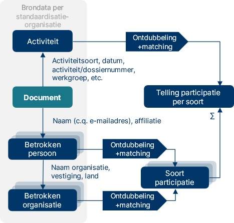
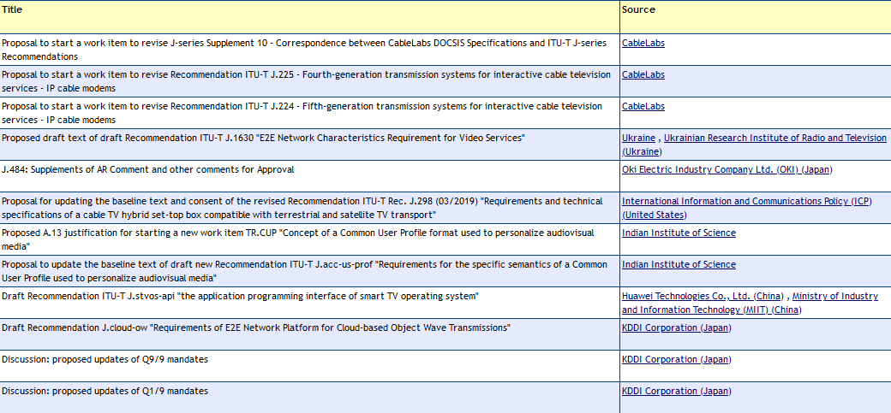

Titel staat in config.js
ICTU Document
Document
- Redacteur:
- Auteur:
Dit document valt onder de volgende licentie:

Creative Commons Attribution 4.0 International Public License
Dit document valt onder de volgende licentie:
Creative Commons Attribution 4.0 International Public License
Tekst
Dit is een document zonder officiële status.
De kwantitatieve analyse beoogt in kaart te brengen in welke mate Nederlandse organisaties vertegenwoordigd zijn in standaardisatietrajecten bij de elf genoemde standaardisatie-organisaties.
Voor de doeleinden van dit onderzoek wordt participatie beschouwd als deelname aan de vormgeving van internationale normen of standaarden. Hier maken wij onderscheid tussen drie verschillende eigenschappen van participatie: representatievorm, participatieobject en participatiemethode. Hieronder zetten wij deze drie uiteen.
Representatievorm
De representatievorm is de wijze waarin een belang vertegenwoordigd wordt bij een internationale standaardisatie-organisatie. In dit onderzoek staan Nederlandse belangen voorop; d.w.z. de belangen van Nederlandse organisaties. Afhankelijk van de structuur van de SDO kunnen deze verschillen tussen SDO’s.
We onderscheiden de volgende representatievormen:
Landelijke afvaardiging. Bij een aantal SDO’s is sprake van nationale vertegenwoordiging in plaats van directe vertegenwoordiging door organisaties. Een land is lid van het standaardisatie-orgaan en wordt geacht als land inbreng te hebben en te stemmen. In Nederland wordt dat belang opgesteld binnen NEN. NEN heeft normcommissies, die gespiegeld zijn aan de internationale werkgroepen. Nederlandse organisaties kunnen dus als NEN-lid aansluiten bij die normcommissies en als afgevaardigde deelnemen aan het opstellen van standaarden bij de SDO’s
Individuele vertegenwoordiging. Bij enkele SDO’s kunnen individuen lid worden, al dan niet namens een organisatie. Deze affiliatie is dus optioneel. In de scope van dit onderzoek zijn zowel directe individuele vertegenwoordiging van Nederlanders als Nederlandse affiliatie relevant. Dat eerste valt echter niet te bepalen van individuen. Ook hier wordt dus primair gekeken naar de affiliatie die wordt opgegeven.
Organisatievertegenwoordiging. Vaak kunnen organisaties lid worden van SDO’s. In dat geval kunnen zij elk individu vragen hun belang te vertegenwoordigen bij de commissies van de SDO’s.
Onderstaande Tabel 1 laat zien welke representatievorm de onderzochte SDO’s hanteren.
Tabel 1. Representatievorm per onderzochte SDO. Met een “x” is aangegeven of een representatievorm bij een SDO aanwezig is.
| SDO | Landelijke afvaardiging | Individuele vertegenwoordiging | Organisatie-vertegenwoordiging |
|---|---|---|---|
| 3GPP | X | ||
| CEN | X | ||
| CENELEC | X | ||
| ETSI | X | ||
| IEC | X | ||
| IEEE-SA | X | X | |
| IETF | X | X | |
| ISO | X | ||
| ITU | X | X | |
| OASIS | X | ||
| W3C | X | ||
| NB: Er zijn in sommige gevallen afwijkingen mogelijk, de norm is hier weergegeven. Zo kan er bijvoorbeeld wel sprake bij van vertegenwoordiging als expert bij CEN, CENELEC, ISO en IEC. |
Toegepast op Nederlandse participatie staat voorop dat de organisatie Nederlands is. Via landelijke afvaardiging is dat gegarandeerd, via de andere twee vormen is dat waar de kern van de kwantitatieve analyse ligt. In onderstaande box lichten we de categorieën van Nederlands belang toe.
Definitie van ‘Nederlandse’ organisaties
Op de vraag of een organisatie ‘Nederlands’ is, zijn meerdere antwoorden mogelijk. Gelet op het doel van het onderzoek gaat het om organisaties waarvan de participatie in standaardisatie (uiteindelijk) een bijdrage levert aan de Nederlandse economie. In dat kader onderscheiden we de volgende gradaties van het ‘Nederlands zijn’ van organisaties:
Nederlandse organisaties (ingeschreven bij de Kamer van Koophandel) zonder (noemenswaardige) internationale vestigingen, zoals bijvoorbeeld TNO.
Nederlandse organisaties (hoofdkantoor in Nederland) met internationale vestigingen, bijvoorbeeld Philips (hoofdkantoor in Amsterdam).
Nederlandse vestigingen van buitenlandse organisaties (hoofdkantoor niet in Nederland), bijvoorbeeld Ericsson (vestiging in Rijen, hoofdkantoor in Zweden).
Nederlandse ‘brievenbusholdings’ van buitenlandse organisaties (organisatie is formeel gevestigd in Nederland, maar alleen om administratieve/fiscale reden; het merendeel van de activiteiten vindt in het buitenland plaats). Een voorbeeld hiervan is (het voormalige) Alcatel.
Nederlandse overheidsorganisaties/overheidsonderdelen. Hierbij onderscheiden we:
Formele vertegenwoordigers van de Nederlandse overheid (in deze dataset slechts EZ, bij andere SDO’s kunnen dit andere organisaties zijn)
Organisatie-onderdelen van de Nederlandse overheid, waaronder van de Rijksoverheid, provincies, gemeenten, waterschappen, ZBOs en overheidsstichtingen, zoals Geonovum.
Nederlanders (personen met Nederlandse nationaliteit) die op persoonlijke titel deelnemen in standaardisatie-organisaties, bijvoorbeeld individuele deelnemers aan IETF.
Categorie 4 is in overleg door de opdrachtgever in dit onderzoek buiten de afbakening van het onderzoek geplaatst.
Participatieobject
Participatie kan binnen een SDO op verschillende niveaus. Wij hanteren drie verschillende objecten, met een beperkt onderscheid: Beleidscommissies, technische commissies, werkgroepen en standaarden. Hierin zit een hiërarchische structuur:
Beleidscommissies gaan over de organisatie en strategie van de SDO.
Technische commissies gaan over een standaard en voeren daar de regie.
Werkgroepen diepen onderdelen van het programma van een technische commissie uit.
Tussen de SDO’s bestaan grote verschillen in organisatiestructuur. Bovenstaande is gesimplificeerd om de SDO’s vergelijkbaar te maken.
Participatiemethode
Participeren kan op verschillende manieren. Wij onderscheiden er hier vijf, hoewel deze onderscheiden niet allemaal (c.q. voor alle SDO’s) gemaakt kunnen worden, omdat de stemmingen niet beschikbaar zijn in dit onderzoek. Deze methoden zijn:
Lidmaatschap van een commissie of werkgroep.
Vervulling van formele rollen binnen een commissie of werkgroep. Bijvoorbeeld een voorzitterschap, secretariaat of een editorrol bij een standaard.
Deelname aan overleggen van een commissie of werkgroep.
Indienen van technische contributies voor een overleg van een werkgroep.
Stemmen over de inhoud van standaarden of beleid (zeldzaam, consensus heeft de voorkeur).
Volledig participatiemodel
Samen maken participatieobject, participatievorm en representatievorm een participatie. Dit is in figuur 1 volledig weergegeven voor individuele vertegenwoordiging. Langs dit model kan elke participatie worden geformuleerd volgens de volgende algemene vorm:
Persoon X
Optioneel: Namens organisatie Y
Is lid van/vervult formele rol/ neemt deel aan overleg/dient contributie in/stemt
Bij werkgroep/commissie Z
Optioneel: Als [rol]
Optioneel: Op datum [dd-mm-jjjj]
De gegevens die in dit onderzoek zijn verzameld, zijn in dit format samengevoegd voor een vergelijkbare structuur tussen SDO’s.
Figuur 1 hieronder toont het participatiemodel voor individuele vertegenwoordiging, met de persoon en organisatie, die met een participatievorm (lidmaatschap, formele rol, deelname aan overleg, technische contributie of stemming) op één van de drie niveaus (beleidscommissie, technische commissie of werkgroep) binnen SDO's participeren.
Figuur 1. Voorbeeld van een volledig uitgewerkt participatiemodel voor individuele vertegenwoordiging

Stap 1. Toegang tot bronnen verkrijgen
Om deze participaties in kaart te brengen verzamelen wij beschikbare documentatie over de werkgroepen en deelnemers. Hiertoe hebben wij een aantal gegevensbronnen:
Gegevens van NEN en gesprekken met NEN.
Openbare gegevens van de SDO’s. Dit betreft gegevens die zij via een website of API beschikbaar maken.
Voor ETSI en 3GPP heeft het Ministerie van EZ onderzoekers toegang gegeven om gegevens uit het portal te halen. Deze gegevens zijn niet voor andere doeleinden gebruikt dan de kwantitatieve analyse. Voor ITU is ook toegang verleend, maar daar was geen toegang zonder lidmaatschap van werkgroepen, wat te ver ging voor dit onderzoek.
Voor IEC en ISO heeft NEN gegevens opgevraagd.
De gegevens die dit betreft wisselen per SDO, mede afhankelijk van de structuur. In alle gevallen is het onderzoek beperkt tot de gegevens die beschikbaar zijn. Waar mogelijk is gezocht naar toegang (via NEN en EZ). In de hoofdlijn is de procedure over alle SDO’s identiek: Uit de bronnen halen wij documenten op (doorgaans webpagina’s, in sommige gevallen API-responses of bestanden).
In deze documenten, waarvan het bestaan duidt op een bepaalde activiteit binnen een standaardisatieproces, zijn veelal namen van personen en organisaties te vinden. In sommige gevallen is hierbij een aanduiding van een filiaal en/of land te vinden.
Op basis van deze documenten kan een telling worden uitgevoerd van participatie aan standaardisatie, die kan worden uitgesplitst op eigenschappen van de betrokkenen. Hierbij speelt echter een aantal randvoorwaarden:
De opgehaalde documenten moeten een volledig of anders representatief beeld geven van de standaardisatie-activiteiten;
De informatie over participatie/deelname kan herleid worden naar een organisatie (bedrijf)
De namen van personen en organisaties moeten consistent zijn, of ontdubbeld kunnen worden.
In dit onderzoek ligt de focus op elf SDO’s, elk met hun eigen werkwijze en bijbehorende formats en procedures rondom het publiceren van de bovengenoemde informatie. De uitdaging binnen dit onderzoek is dan ook (1) het omgaan met deze variatie en (2) het combineren van de resultaten tot een consistente telling. Figuur 2 geeft een schematische weergave van telling van participatie: Startpunt is een document. Daaruit worden zowel activiteiten als personen/organisaties gehaald. Samengevoegd leidt dit tot het eerder beschreven participatiemodel en kunnen daar (na ontdubbelen) tellingen van participatie mee worden gemaakt.
Figuur 2. Schematisch overzicht opzet meting
Stap 2. Gegevensverzameling (per SDO)
De gegevensverzameling is per SDO geoptimaliseerd op basis van de beschikbare gegevens voor die SDO. Paragraaf Fout! Verwijzingsbron niet gevonden. geeft een overzicht van de beschikbare gegevens per SDO. De gegevens worden samengebracht in een database, van waaruit een analyseversie wordt opgesteld volgens de operationalisatie zoals beschreven in Fout! Verwijzingsbron niet gevonden..
De gegevensverzameling vindt geautomatiseerd plaats en alleen van gegevens die zonder verdere handelingen gestructureerd beschikbaar waren. Hiermee vallen bijvoorbeeld commissies en werkgroepen weg die in een eigen format websites hebben en documenten die niet gestandaardiseerd zijn opgesteld. Gegevens waarvoor het nodig was om als individu lid te worden van een werkgroep zijn ook niet verzameld. De opdrachtgever heeft ook gegevens over participatie verstrekt.
Waar het niet mogelijk was om aanwezigheid bij vergaderingen te verzamelen is gekeken of dit opgevangen kon worden met het verzamelen van technische contributies. Door technische contributies kunnen leden een inhoudelijke bijdrage leveren aan (de agenda van) een vergadering van een werkgroep, echter is de selectie hiermee beperkt tot de organisaties waarvan wij technische contributies kunnen verzamelen.
In het geval van nationale vertegenwoordiging (IEC, ISO en CEN-CENELEC) is beperkt openbaar beschikbaar welk individu waarbij zit. Voor IEC en ISO heeft NEN gegevens voor dit onderzoek gedeeld met de onderzoekers. NEN kan om AVG-technische redenen niet alle lidmaatschappen van individuele experts delen. De rollen zijn op landniveau gedefinieerd. Hier gaan echter wel Nederlandse vertegenwoordigingen naartoe via NEN. Waar mogelijk zijn de lidmaatschappen en formele rollen (secretariaten en voorzitterschappen) wel verzameld, maar deze zijn op landsniveau, niet op persoonsniveau of organisatieniveau.
Bij het verzamelen van participaties betreft het personen die participeren en daarmee zijn het dus persoonsgegevens. Deze zijn verzameld, maar zijn slechts beperkt gebruikt in het onderzoek. In overeenstemming met afspraken met de opdrachtgever en regelgeving op het gebied van persoonsgegevens zijn analyses niet op persoonsniveau gedaan.
Stap 3. Gegevensverrijking
Na verzameling worden organisaties gecodeerd op of er sprake is van een Nederlands belang of niet. Hiervoor is gebruik gemaakt van een lijst van 58 organisaties met organisatiecodering. Participaties namens organisaties die op deze lijst stonden worden in de database automatisch gemarkeerd als Nederlands belang.
Deze lijst is handmatig gevalideerd na samenstelling uit de volgende bronnen:
Leden van de normcommissies van NEN zijn aangewezen als mogelijk Nederlands.
Organisaties met een Nederlandse organisatievorm (BV, NV, VOF) zijn aangemerkt als mogelijk Nederlands.
Organisaties waarvan de deelnemers een emailadres hadden met een Nederlands domein (.nl) zijn aangemerkt als mogelijk Nederlands.
De beschikbaarheid van gegevens wisselde sterk tussen SDO’s. Hierachter liggen twee voorname redenen: Door de organisatievorm van SDO’s verschillen de beschikbare gegevens en door toegangsbarrières was het in deze studie niet haalbaar om alle gegevens te verzamelen. Tabel laat voor de gezochte participatievormen zien bij welke SDO langs welke route het mogelijk was om de gegevens op te halen. CEN en CENELEC zijn samengevoegd omdat zij ook gezamenlijk een platform hebben. Hieronder lichten wij de redenen kort toe.
SDO-vorm: Nationale vertegenwoordiging versus organisatievertegenwoordiging
In de SDO’s met nationale vertegenwoordiging is sprake van vertegenwoordiging namens lidstaten. De lidstaten zijn lid en voeren personen op om het land te vertegenwoordigen. Hier is sprake van bij CEN-CENELEC, ISO en IEC. Bij ETSI is hier sprake van wanneer er gestemd wordt over geharmoniseerde standaarden.
De afvaardiging die namens Nederland naar deze SDO’s gaat, is echter niet noodzakelijk een overheidsvertegenwoordiger. NEN heeft parallelle normcommissies waarin de Nederlandse deelnemers hun belangen afstemmen. Gezamenlijk wordt een standpunt bepaald. Omdat het een nationale afvaardiging betreft, is het dan dus niet direct namens een organisatie – hoewel de organisatie wel invloed heeft door naar voren geschoven te worden. Voor bijdrage aan het opstellen van standaarden kunnen experts op persoonlijke titel op internationaal niveau deelnemen. Dit kunnen ook meerdere experts zijn.
Omdat bij deze SDO’s geen sprake is van een officiële organisatievertegenwoordiging en worden zij dus ook niet als zodanig verzameld. NEN heeft wel gegevens beschikbaar gesteld over de afvaardigingen naar ISO en IEC. Hierbij weten wij niet welke organisatie de deelnemers vertegenwoordigen.
Barrières voor toegang
Niet alle gewenste te verzamelen gegevens zijn openbaar toegankelijk, noch toegankelijk gebleken voor de onderzoekers. In sommige gevallen maken standaardisatie-organisaties (delen van) gegevens alleen beschikbaar aan deelnemers van werkgroepen. Dit betekende in het geval van IEEE dat het onmogelijk was om participaties te verzamelen.
Merk op dat het feit dat gegevens ten tijde van het onderzoek beschikbaar waren, niet betekent dat deze beschikbaar blijven. Hier was tijdens het onderzoek al sprake van bij ITU. In het vooronderzoek bleek het mogelijk om personen en organisaties te achterhalen die lid zijn van een werkgroep. Deze gegevens zijn later in het ledenportaal geplaatst en alleen toegankelijk gemaakt voor leden van werkgroepen.
Tabel 2. Overzicht haalbaarheid gegevensverzameling per SDO per gegevenstype. Waar ingevuld is een methode gevonden om bij de gegevens te komen. Waar geel bleek dat niet haalbaar, overige gegevens zijn verzameld. Legenda: OW = openbare website, LP = ledenportaal, API = application programmable interface. Overige zijn beschreven.
| Organisatie | Werk-groepen | Leden per werkgroep | Bestuurders per werkgroep | Affiliatie lid/bestuurder | Meetings per werkgroep | Datum per meeting | Aanwezigen per meeting | Technische contributies per meeting |
|---|---|---|---|---|---|---|---|---|
| CEN- CENELEC |
OW | OW | ||||||
| ISO | OW | |||||||
| IEC | OW | OW | OW | OW | OW | |||
| ETSI | OW | LP | LP | LP | LP | LP | LP | |
| 3GPP | OW of LP | LP | OW of LP | LP | LP | LP | ||
| ITU | OW | Lidmaatschap werkgroep vereist | OW | Lidmaatschap werkgroep vereist | Lidmaatschap werkgroep vereist | Lidmaatschap werkgroep vereist | Lidmaatschap werkgroep vereist | OW |
| IETF | API | API | API | Bluenotes (.txt) | API | API | API | |
| IEEE | OW | LP | LP | |||||
| W3C | API | API | API | API | ||||
| OASIS | OW | OW | OW | OW |
CEN en CENELEC (Comité Européen de Normalisation - Comité Européen de Normalisation Élecrotechnique) heeft nationale vertegenwoordigingen, wat betekent dat namens Nederland de NEN lid is. Er worden experts afgevaardigd vanuit de NEN-normcommissies om die Nederlandse positie te vertegenwoordigen. Zij kunnen ook individueel deelnemen aan het opstellen van standaarden. Voor gegevens over individuele participaties zijn wij daarom afhankelijk van NEN. Het is niet mogelijk gebleken om voor afronding van deze studie die gegevens op te halen.
ETSI (European Telecommunications Standards Institute) heeft een gemengde ledenstructuur. Van oorsprong kunnen organisaties lid worden van ETSI. Deze leden hebben dan stemrecht. Echter, onder druk van de EC moet voor geharmoniseerde standaarden gestemd worden door lidstaten. Daarom heeft ETSI voor geharmoniseerde standaarden nu een andere stemprocedure. Hierbij moet als kanttekening worden geplaatst dat stemmen niet vaak voorkomt. Uit onderzoek blijkt dat ETSI doorgaans met een consensusmodel beslist, bijvoorbeeld in 95,4% van de gevallen in het General Assembly. Het standaardisatieproces gaat echter nog wel zoals voorheen, door werkgroepen met de bestaande leden. Daarom richten wij ons voor deelname aan standaardisatie binnen ETSI op de organisatielidmaatschappen.
Nederlandse ETSI-leden zijn verenigd in NELO (Nederlands ETSI-Leden Overleg). Positiebepaling voor geharmoniseerde standaarden gaat via NEPE (Nederlandse ETSI-EN Public Enquiry).
Om gegevens van ETSI te achterhalen hebben wij van het ministerie van Economische Zaken onder voorwaarden toegang gekregen tot het ledenportaal.
Voor ETSI hebben wij de volgende gegevens kunnen ophalen:
Per orgaan binnen ETSI (bijv. WG/TC):
Afkorting
Naam
Leden met rol waar van toepassing
Meetings van het orgaan
Per lid:
Naam
Organisatie
Per meeting van een orgaan:
Datum
Aanwezigen
Evt. formele rol van aanwezige
Per organisatie:
Naam
Landcode
3GPP (3rd Generation Partnership Project) heeft een structuur met zeven Organisational Partners. Deze zeven zijn regionale SDO’s op het gebied van telecom, ETSI namens Europa. De verdere partners zijn de Japanse Association of Radio Industries and Business en het Telecommunication Technology Committee, de Amerikaanse Alliance for Telecommunications Industry Solutions, de China Communications Standards Association, de Indiase Telecommunications Standards Development Society en de Zuid-Koreaanse Telecommunictions Technology Association. Leden van deze SDO’s kunnen zich ook aanmelden bij 3GPP. De vertegenwoordigers worden doorgaans bij naam genoemd, met organisatie ook beschikbaar.
Voor 3GPP hebben wij de volgende gegevens kunnen ophalen:
Per orgaan binnen 3GPP (bijv. WG/TC):
Code
Naam
Beschrijving
Leden met rol waar van toepassing
Meetings van het orgaan
Per lid:
Naam
Organisatie
Per meeting van een orgaan:
Datum
Aanwezigen
Evt. formele rol van aanwezige (bijv: DELEGATE of CHAIR)
Per organisatie:
Naam
Landcode (onvolledig)
Binnen ITU (International Telecommuncation Union) ligt onze focus op studiegroepen van de ITU-T de tak van ITU waarbinnen gewerkt wordt aan standaarden. Binnen ITU zijn organisaties, individuen én landen lid. Zij kunnen dus ook een vertegenwoordiging sturen, rol vervullen of technical contributions indienen.geeft een illustratie van technical contributions. Ook bij ITU hebben wij via het ministerie van Economische Zaken toegang gekregen tot de gegevens.
Figuur 1. Technical contributions ITU. Bron: [itu.int]
Voor ITU bleek het onrealistisch om gegevens over de participatie te achterhalen, met uitzondering van formele rollen en technical contributions. Overige gegevens over participatie bleken slechts toegankelijk voor leden van de individuele werkgroepen.
Dit levert de volgende gegevens op:
Per orgaan binnen ITU (bijv. WG/TC):
Code
Naam
Beschrijving
Leden met formele rol
Technische contributies
Per lid met formele rol:
Naam
Organisatie
Per technische contributie:
Titel
Ondertekenende organisaties
Per organisatie:
Bij ISO zijn nationale standaardisatie-organisaties lid, namens Nederland NEN. Andere organisaties (voornamelijk SDO’s) kunnen wel voorstellen indienen. Naar buiten toe worden de lidmaatschappen van de technische commissies per land weergegeven. Er worden wel experts afgevaardigd vanuit de NEN normcommissies om die Nederlandse positie te vertegenwoordigen. NEN heeft voor dit onderzoek gegevens opgevraagd bij ISO over de Nederlandse experts die deelnemen aan werkgroepvergaderingen. Dit bevat voor de jaren 2019 tot en met 2024 de volgende gegevens:
TC/Werkgroep code
TC/Werkgroep naam
Meeting id
Meeting type
Startdatum
Einddatum
Aantal deelnemers namens Nederland
Bij IEC kan per land één National Committee lid worden. Namens Nederland is dat het Netherlands Electrotechnical Committee (NEC). Binnen commissies kan net als bij ISO een rol als deelnemend lid worden gekozen of een rol als observer. Nederland is volwaardig lid, maar een aantal landen is ook affiliate. Er worden wel experts afgevaardigd vanuit NEN normcommissies om die Nederlandse positie te vertegenwoordigen. Hiervoor heeft NEN voor dit onderzoek gegevens opgevraagd bij IEC over de Nederlandse experts die deelnemen aan werkgroepvergaderingen. Dit bevat voor de jaren 2019 tot en met 2024 de volgende gegevens:
Naam participant
Meeting
Meeting type
Beschrijving
Rol bij de meeting
Main meeting (congres waar meeting deel van uitmaakt)
Locatie
Wijze van participatie
Goedkeuring participatie
Registratie (Submitted/Not submitted)
Startdatum
Einddatum
IETF heeft geen ledenstructuur. Iedereen kan zich aanmelden voor een werkgroep en wordt verwacht deel te nemen als individu. Deelnemers zijn dan dus niet organisatiegebonden, maar vaak wel afgevaardigde. IETF heeft een datatracker, waar langs een openbare API gegevens kunnen worden opgevraagd. Voor meetings zijn er verder zogeheten bluenotes, waarin aanwezigen met affiliatie staan voor elke meeting.
Voor IETF zijn de volgende gegevens opgehaald:
Per orgaan binnen IETF (bijv. WG/TC):
Afkorting
Naam
Beschrijving
Type (volgens de hiërarchie van IETF; 23 categorieën)
Parentorgaan (de organen zijn in een boomstructuur opgesteld en hangen uiteindelijk allen onder IETF zelf)
Leden
Meetings van het orgaan
Per lid:
Naam
E-mailadres
Naam van organisatie, mits via de Datatracker of bluenotes herleidbaar
Per meeting van een orgaan:
Datum
Aanwezigen
IEEE-SA is de standaardisatie-organisatie van IEEE. Lidmaatschap van IEEE-SA kan als individu (bijvoorbeeld als student of als professional) of organisatie. Voor IEEE is het niet gelukt om toegang te krijgen tot gegevens over participatie op het gewenste niveau. Deze waren niet openbaar online beschikbaar en wij hebben hiervoor ook geen medewerking kunnen verkrijgen.
W3C draait om organisatielidmaatschap. Individuen mogen deelnemen, maar doen dat dan in de rol van “invited expert”. W3C heeft een goed toegankelijke API. Hier kan worden opgehaald wie lid is van werkgroepen, welke formele rol zij hebben en welke affiliaties deze personen hebben. De onderstaande gegevens waren daardoor eenvoudig beschikbaar.
Per orgaan binnen W3C (bijv. WG/TC):
Naam
Beschrijving
Type (optioneel)
Leden met formele rol waar relevant
Per lid:
Naam
E-mailadres (mits zelf opgegeven)
Land (mits zelf opgegeven)
Naam van de organisatie
OASIS heeft organisatielidmaatschap. Medewerkers van leden kunnen deelnemen aan standaardisatieprocessen. Het maakt standaarden via technical committees (TC’s), maar er is ook ruimte voor open projecten. Voor OASIS hebben wij de volgende gegevens kunnen achterhalen:
Per orgaan binnen OASIS (bijv. WG/TC):
Afkorting
Naam
Leden
Per lid:
Naam (optioneel)
Naam van de organisatie
In de online dataverzameling hebben wij in totaal 3973 technical committees, subcommittees en werkgroepen opgehaald. Dit gaat breder dan alleen digitalisering, het laat de volledige breedte van het werkgebied van ISO zien. Bij 768 was openbaar te achterhalen welk land het secretariaat voert. Bij de werkgroepen was dit doorgaans niet mogelijk en NEN voert secretariaten van een deel van deze werkgroepen. Voor zover dit openbaar beschikbaar was kunnen wij stellen dat NEN het secretariaat voert van 9 technical committees en subcommittees. Dit zijn (Tabel ):
Tabel 3 Werkgroepen in ISO met werkgroepnaam waar NEN het secretariaat van voert
| Werkgroep | Werkgroepnaam |
|---|---|
| ISO/TC 138/SC 4 | Plastics pipes and fittings for the supply of gaseous fuels |
| ISO/TC 138/SC 5 | General properties of pipes, fittings and valves of plastic materials and their accessories -- Test methods and basic specifications |
| ISO/TC 193 | Natural gas |
| ISO/TC 193/SC 1 | Analysis of natural gas |
| ISO/TC 28 | Petroleum and related products, fuels and lubricants from natural or synthetic sources |
| ISO/TC 308 | Chain of custody |
| ISO/TC 34/SC 5 | Milk and milk products |
| ISO/TC 35 | Paints and varnishes |
| ISO/TC 67 | Oil and gas industries including lower carbon energy |
Duitsland voert met 133 TC’s en SC’s de meeste secretariaten, gevolgd door VS (95) en Japan (82). Vergelijkbare landen voeren ongeveer evenveel secretariaten: België (5), Denemarken (5) en Noorwegen (8).
Tabel 4. Aanwezigheid bij vergaderingen van ISO per jaar in een selectie van ISO-lichamen, beperkt tot het digitale domein
| Jaar | Aanwezigheid |
|---|---|
| 2019 | 89 |
| 2020 | 209 |
| 2021 | 359 |
| 2022 | 321 |
| 2023 | 309 |
| 2024 | 391 |
Nederland is lid van 174 van de 195 technical committees en subcommittees van IEC. Waarover gegevens openbaar waren. Net als bij ISO geldt ook dat deze lidmaatschappen over de volledige breedte van IEC gaan.
Tabel 5. Aanwezigheid en aantal vervullingen van formele rollen bij IEC per jaar
| Jaar | Aanwezigheid | Vervulling formele rol |
|---|---|---|
| 2019 | 397 | 38 |
| 2020 | 221 | 22 |
| 2021 | 299 | 24 |
| 2022 | 337 | 34 |
| 2023 | 379 | 33 |
| 2024 | 384 | 41 |
Tabel 6 Nederlandse vertegenwoordiging in aantallen bij ETSI, per organisatietype per participatievorm
| Organisatietype | Lid commissie/ werkgroep |
Formele rol | Bijwonen meeting | Totaal |
|---|---|---|---|---|
| Nederlandse orgs, met internationaal | 24 | 1 | 182 | 207 |
| Nederlandse orgs, met internationaal | 43 | 2 | 567 | 612 |
| Nederlandse vestigingen van internationale organisaties | 5 | 1 | 133 | 139 |
| Formele vertegenwoordiging overheid | 40 | 2 | 652 | 694 |
| Overheids- organisaties |
3 | 14 | 17 | |
| Totaal | 115 | 6 | 1.548 | 1.669 |
Tabel 7 Nederlandse participatie in aantallen als deel van totale ETSI-participatie
| Land van oorsprong | Lid commissie/ werkgroep |
Formele rol | Bijwonen meeting |
|---|---|---|---|
| Niet-Nederlands | 6.963 | 615 | 106.093 |
| Nederlands | 115 | 6 | 1.548 |
Formele rollen
Ministerie van Economische Zaken (tweemaal)
EVE consulting solutions
Philips International B.V.
NXP Semiconductors Netherlands B.V.
Microsoft
Bij ETSI zijn “delegate”, “member”, “staff” en “observer” uitgesloten van de formele rollen.
Aanwezigheid meetings
Tabel 8. Aanwezigheid in aantallen bij ETSI-meetings per type organisatie per jaar
| Type organisatie | 2019 | 2020 | 2021 | 2022 | 2023 | 2024 | Totaal |
|---|---|---|---|---|---|---|---|
| Nederlandse orgs, met internationaal | 12 | 39 | 49 | 26 | 32 | 24 | 207 |
| Nederlandse orgs, met internationaal | 58 | 101 | 119 | 139 | 93 | 57 | 612 |
| Nederlandse vestigingen van internationale organisaties | 11 | 29 | 38 | 29 | 14 | 12 | 139 |
| Formele vertegenwoordiging overheid | 40 | 135 | 135 | 161 | 100 | 81 | 694 |
| Overheids- organisaties |
2 | 2 | 2 | 3 | 3 | 2 | 17 |
| Totaal | 123 | 306 | 343 | 358 | 242 | 176 | 1669 |
Tabel 9 Nederlandse vertegenwoordiging in aantallen bij 3GPP, per organisatietype per participatievorm
| Organisatietype | Lid commissie/ werkgroep |
Formele rol | Bijwonen meeting | Totaal |
|---|---|---|---|---|
| Nederlandse organisaties, niet internationaal | 94 | 4 | 557 | 655 |
| Nederlandse organisaties, met internationaal | 56 | 455 | 511 | |
| Nederlandse vestigingen van internationale organisaties | 606 | 9 | 4323 | 4938 |
| Overheids- organisaties |
7 | 2 | 61 | 70 |
| Totaal | 763 | 15 | 5396 | 6174 |
Tabel 10 Nederlandse participatie in aantallen als deel van totale 3GPP-participatie
| Land van oorsprong | Lid commissie/ werkgroep |
Formele rol | Bijwonen meeting |
|---|---|---|---|
| Niet-Nederlands | 28729 | 816 | 165022 |
| Nederlands | 763 | 15 | 5396 |
Formele rollen
Nationale Politie (Twee personen/werkgroepen)
TNO/Koninklijke KPN (Vier personen/werkgroepen)
Qualcomm (Negen personen/werkgroepen)
Bij 3GPP zijn “delegate” en “staff” uitgesloten van de formele rollen.
Aanwezigheid meetings
Tabel 11. Aanwezigheid in aantallen bij 3GPP-meetings per type organisatie per jaar
| Organisatietype | 2019 | 2020 | 2021 | 2022 | 2023 | 2024 | Totaal |
|---|---|---|---|---|---|---|---|
| Nederlandse organisaties, met internationaal | 43 | 100 | 115 | 99 | 134 | 66 | 655 |
| Nederlandse organisaties, niet internationaal | 34 | 62 | 91 | 108 | 114 | 46 | 511 |
| Nederlandse vestigingen van internationale organisaties | 231 | 547 | 802 | 1121 | 1131 | 491 | 4938 |
| Overheidsorganisaties | 5 | 14 | 13 | 11 | 12 | 6 | 70 |
| Totaal | 313 | 723 | 1021 | 1339 | 1391 | 609 | 6174 |
Bij ITU zijn 4911 technische contributies verzameld. Er zijn geen contributies uit naam van als Nederlands aangewezen organisaties.
Tabel 12 Nederlandse vertegenwoordiging in aantallen bij IETF, per organisatietype per participatievorm
| Organisatietype | Lid commissie/ werkgroep |
Formele rol | Bijwonen meeting | Totaal |
|---|---|---|---|---|
| Nederlandse organisaties, niet internationaal | 3 | 2 | 539 | 544 |
| Nederlandse vestigingen van internationale organisaties | 22 | 15 | 1440 | 1477 |
| Overheids- organisaties |
57 | 57 | ||
| Totaal | 25 | 17 | 2036 | 2078 |
Tabel 13 Nederlandse participatie in aantallen als deel van totale IETF-participatie
| Land van oorsprong | Lid commissie/ werkgroep |
Formele rol | Bijwonen meeting |
|---|---|---|---|
| Niet-Nederlands | 4167 | 3914 | 110170 |
| Nederlands | 25 | 17 | 2036 |
Formele rollen
TU Delft / QUTech
PowerDNS/Open-Xchange
Microsoft (15)
Bij IETF zijn “member”, “delegate” en “robot” uitgesloten van de formele rollen.
Aanwezigheid meetings
Tabel 14. Aanwezigheid in aantallen bij IETF-meetings per type organisatie per jaar
| Organisatietype | 2020 | 2021 | 2022 | 2023 | 2024 | Totaal |
|---|---|---|---|---|---|---|
| Nederlandse organisaties, niet internationaal | 80 | 134 | 135 | 148 | 42 | 544 |
| Nederlandse vestigingen van internationale organisaties | 152 | 297 | 388 | 482 | 121 | 1477 |
| Overheidsorganisaties | 10 | 43 | 4 | 57 | ||
| Totaal | 232 | 441 | 566 | 634 | 163 | 2078 |
Tabel 15. Nederlandse vertegenwoordiging in aantallen bij W3C, per organisatietype per participatievorm
| Organisatietype | Lid commissie/ werkgroep |
Formele rol | Totaal |
|---|---|---|---|
| Nederlandse organisaties, niet internationaal | 31 | 31 | |
| Nederlandse organisaties, met internationaal | 16 | 16 | |
| Nederlandse vestigingen van internationale organisaties | 242 | 1 | 243 |
| Overheids- organisaties |
6 | 6 | |
| Totaal | 295 | 1 | 296 |
Tabel 16 Nederlandse participatie in aantallen als deel van totale W3C-participatie
| Land van oorsprong | Lid commissie/ werkgroep |
Formele rol |
|---|---|---|
| Niet-Nederlands | 16611 | 17 |
| Nederlands | 295 | 1 |
Formele rollen
Tabel 17 Nederlandse vertegenwoordiging in aantallen bij OASIS, per organisatietype per participatievorm
| Organisatietype | Lid commissie/werkgroep |
|---|---|
| Nederlandse organisaties, niet internationaal | 7 |
| Nederlandse organisaties, met internationaal | 1 |
| Nederlandse vestigingen van internationale organisaties | 30 |
| Overheidsorganisaties | 4 |
| Totaal | 42 |
Tabel 18. Nederlandse participatie als deel van totale OASIS -participatie
| Land van oorsprong | Lid commissie/werkgroep |
|---|---|
| Niet-Nederlands | 3941 |
| Nederlands | 42 |
Voor de kwantitatieve analyse is een onderzoeksmethode gehanteerd die hier verder globaal wordt beschreven.
De gedetailleerde onderzoeksmethode naar de Nederlandse participatie in Europese- en internationale standaardisatie, is beschreven in een separaat document.
Deze bevat:
Een verdere uitwerking van de herkomst van de gegevens van participaties.
Een verdere uitwerking van de resultaten per SDO.
De uitgesplitste cijfers over de participatie.
Voor de kwantitatieve analyse van de participatie van Nederlandse organisaties in internationale normalisatieprocessen zijn gegevens verzameld over 2019 tot en met 2024, van de websites en portalen van de SDO’s en is een dataset beschikbaar gesteld door het Forum Standaardisatie.
Er zijn drie representatievormen voor Nederlandse vertegenwoordiging:
Landelijke afvaardiging: Afgevaardigden van Nederlandse belanghebbenden worden samen via NEN vertegenwoordigd.
Individuele vertegenwoordiging: Nederlandse personen sluiten zich op persoonlijke titel aan bij SDO’s, mogelijk wel namens een organisatie.
Organisatievertegenwoordiging: Een Nederlandse belanghebbende is lid en vaardigt personen af.
De beschikbaarheid van gegevens varieerde per SDO. Voor een overzicht hiervan, zie bijlage A. SDO’s in scope van het onderzoek tabel 13.
Om de participatie van alle SDO’s te kunnen vergelijken is een uniform datamodel opgesteld.
Het Nederlands belang is gekoppeld aan de betreffende organisatie namens welke een persoon participeert. Hiervoor is een ledenlijst van NEN gebruikt, uitgebreid met namen van Nederlandse bedrijven die in de dataset voorkomen. Er zijn twee modellen mogelijk om het Nederlands belang te bepalen:
De organisatie is met vermelding van land geregistreerd bij de SDO.
In dat geval wordt de landvermelding overgenomen, maar wordt de organisatie zelf opgenomen in de organisatielijsten, zodat participatie aan andere SDO’s hiermee verrijkt kan worden.
De organisatie moet op naam gematcht en gekoppeld worden aan een organisatie uit de organisatielijsten. Wanneer er een match is, kan geconcludeerd worden dat er sprake is van vertegenwoordiging van een Nederlands belang.
De tweede route introduceert een complexiteit wanneer sprake is van multinationals, die relatief vaak als Nederlands belang worden aangemerkt omdat zij lid zijn van NEN en dus ook via hun Nederlandse belang participeren. Bij de bespreking van de resultaten wordt hier dieper op ingegaan.
Voor dit deel van het onderzoek zijn connecties gelegd met 34 organisaties via NEN, leden van Forum Standaardisatie en het eigen netwerk van ICTU. Met de geïnterviewden is afgesproken dat ze anoniem blijven. Van de geïnterviewden zijn er vier Engelstalig waaronder twee van de EC. De overige personen zijn Nederlandstalig. Ze ontvingen vooraf de te bespreken onderwerpen.
De interviews, duurden gemiddeld 60 minuten en hebben tussen mei en december 2024 plaatsgevonden. Ze zijn online afgenomen en automatisch getranscribeerd. Vervolgens zijn de gesprekssamenvattingen geautomatiseerd gegenereerd en hebben de onderzoekers handmatig per samenvatting tekstdelen gecategoriseerd op basis van de onderwerpen die gerelateerd zijn aan onderzoeksvragen 2 en 3.
Tabel 1 toont het overzicht van het aantal geïnterviewde personen per SDO en per organisatiecategorie. De SDO waaraan de geïnterviewde het meest bijdraagt, is opgenomen.
| SDO | Micro | MKB | Groot | Overig** | Overheid | Europese Commissie | Eindtotaal |
|---|---|---|---|---|---|---|---|
| CEN | 1 | 1 | 2 | ||||
| CEN/CENELEC | 3 | 1 | 4 | ||||
| ISO | 5 | 1 | 1 | 7 | |||
| Oasis | 2 | 2 | |||||
| W3C | 1 | 1 | 2 | ||||
| ETSI | 2 | 1 | 3 | ||||
| Geen* | 2 | 1 | 2 | 5 | |||
| IETF | 1 | 1 | 2 | ||||
| ISO/IEC | 1 | 1 | 1 | ||||
| 3GPP | 1 | 1 | |||||
| IEEE-SA | 2 | 2 | |||||
| IEC | 1 | 1 | |||||
| GS1 | 1 | 1 | |||||
| Totaal | 2 | 2 | 15 | 3 | 7 | 4 | 34 |
*Geen: geen actieve / passieve rol in een SDO. Geïnterviewden hebben een coördinerende rol of beleidsmatige rol.
**Overig: stichting, coöperatie met publieke taken, brancheorganisatie
Om antwoord te kunnen geven op deze vraag, is de Nederlandse vertegenwoordiging in kaart gebracht. Vervolgens is onderzocht hoe de vertegenwoordiging zich heeft ontwikkeld over de afgelopen vijf jaar (2019-2024).
Voor de doeleinden van dit onderzoek wordt participatie beschouwd als deelname aan het vormgeven van internationale standaarden. Hierbij wordt onderscheid gemaakt tussen drie verschillende eigenschappen van participatie: 1) representatievorm, 2) participatieobject en 3) participatiemethode.
De verzamelde gegevens voor het kwantitatief in kaart brengen van participatie zijn over de verschillende SDO’s gestandaardiseerd samengevoegd in de volgende algemene vorm per participatie:
Persoon X
Optioneel: Namens organisatie Y
Is lid van/vervult formele rol/ neemt deel aan overleg/dient contributie in/stemt
Bij werkgroep/commissie Z
Optioneel: Als [rol]
Optioneel: Op datum [dd-mm-jjjj]
Nederlandse belanghebbenden zijn geïdentificeerd aan de hand van een aantal strategieën, in de meeste gevallen op basis van de organisatienaam. De aantallen participaties die hier vermeld zijn, moeten daarom gezien worden als minimale aantallen. Mogelijk zijn er meer, niet alle gegevens kunnen worden achterhaald.
Wanneer wordt gesproken van Nederlandse belanghebbenden, kan dat verschillende typen organisaties betreffen:
Nederlandse organisaties (ingeschreven bij de Kamer van Koophandel) zonder (noemenswaardige) internationale vestigingen, zoals bijvoorbeeld TNO.
Nederlandse organisaties (hoofdkantoor in Nederland) met internationale vestigingen, bijvoorbeeld Philips (hoofdkantoor in Amsterdam).
Nederlandse vestigingen van buitenlandse organisaties (hoofdkantoor niet in Nederland), bijvoorbeeld Ericsson (vestiging in Rijen, hoofdkantoor in Zweden).
Nederlandse ‘brievenbusholdings’ van buitenlandse organisaties (formeel gevestigd in Nederland, maar alleen om administratieve/fiscale reden, het merendeel van de activiteiten vindt in het buitenland plaats). Een voorbeeld hiervan is (het voormalige) Alcatel. (Deze categorie is in overleg door de opdrachtgever buiten de afbakening van het onderzoek geplaatst).
Nederlandse overheidsorganisaties/overheidsonderdelen. Hierbij onderscheiden we:
Formele vertegenwoordigers van de Nederlandse overheid (in deze dataset slechts EZ, bij andere SDO’s kunnen dit andere organisaties zijn) en
Organisatieonderdelen van de Nederlandse overheid, waaronder van de Rijksoverheid, provincies, gemeenten, waterschappen, ZBO’s en overheidsstichtingen, zoals Geonovum.
Nederlanders (personen met Nederlandse nationaliteit) die op persoonlijke titel deelnemen in standaardisatie-organisaties, bijvoorbeeld individuele deelnemers aan IETF.
Voor de aanwijzing van Nederlandse belanghebbenden zijn soortgelijke criteria gehanteerd die NEN gebruikt voor lidmaatschap: indien er sprake is van een Nederlands economisch belang, kan een organisatie die niet primair in Nederland gevestigd is wel deelnemen aan standaardisatie. Zo wordt een brievenbusfirma uitgesloten, maar kan een organisatie met financiële activiteiten in Nederland wel degelijk vanuit Nederlands belang participeren. Participatie wordt gekoppeld aan de organisatie, niet de persoon. Er hoeft dus niet noodzakelijk een deelnemer vanuit Nederland afgevaardigd te worden, zolang de organisatie binnen de categorieën Nederlandse belanghebbenden valt.
In totaal bevat de dataset van verzamelde data 469.629 individuele deelnames. Fout! Verwijzingsbron niet gevonden. toont het totale aantal participaties, zowel van Nederlandse belanghebbenden als het totale aantal per categorie, in de dataset per SDO-type. Elke participatie representeert één deelname van één persoon. ISO en IEC betreffen alleen Nederlandse participaties, verkregen via NEN. Van CEN-CENELEC hebben wij geen gegevens over participatie.
Tabel 2 Totaal aantal participaties van Nederlandse belanghebbenden in de dataset per SDO en participatievorm. De waarde tussen haakjes is het totale aantal voor die categorie. Voor IEC en ISO zijn de beschikbare gegevens beperkt tot participatie van Nederlandse belanghebbenden. Zij zijn aangegeven met een asterisk (*). In de totalen zijn zij zowel opgeteld bij Nederlandse belanghebbenden als bij totale participatie. Dit is over de periode 2019-2024, afhankelijk van beschikbaarheid van gegevens.
| SDO | Lid commissie/ werkgroep |
Formele rol | Bijwonen bijenkomst | Technische contributie | Totaal |
|---|---|---|---|---|---|
| 3GPP | 763 (29.492) |
15 (831) |
5.396 (170.418) |
6.174 (199.910) |
|
| ETSI | 115 (7.078) |
6 (621) |
1.548 (107.641) |
1.669 (115.340) |
|
| IETF | 25 (4.192) |
17 (3.931) |
2.036 (112.206) |
2.078 (120.331) |
|
| ITU | 0 (1.802) |
0 (1.802) |
0 (4.911) |
0 (6.713) |
|
| OASIS | 42 (3.983) |
42 (3.983) |
|||
| W3C | 295 (16.906) |
1 (18) |
296 (16.924) |
||
| IEC* | 2.017 | 2.017 | |||
| ISO* | 102 | 1.678 | 1.780 | ||
| Totaal | 1.240 (63.453) |
141 (7.305) |
12.675 (393.960) |
0 (4.911) |
14.056 (469.629) |
De totale Nederlandse participatie per organisatietype wordt getoond in tabel 3 voor de SDO’s waarbij dat herleidbaar is. Nederlandse participatie is geoperationaliseerd als participatie namens een Nederlands belang.
IEC en ISO hebben nationale vertegenwoordiging geregistreerd, hier is de organisatie niet herleidbaar. Omdat hier geen organisatietypes kunnen worden geduid, zijn deze niet weergegeven in onderstaande cijfers.
Tabel 3 Toont het aantal Nederlandse participaties per organisatietype over de periode 2019-2024. NB: Van het totaal ontbreken IEC en ISO omdat daar geen koppeling met een organisatie gemaakt kan worden.
| Type | Aantal participaties |
|---|---|
| Nederlandse organisaties zonder (noemenswaardige) internationale vestigingen (n=42) | 1558 |
| Nederlandse organisaties met internationale vestigingen (n=5) | 1237 |
| Nederlandse vestigingen van buitenlandse organisaties (n=16) | 7435 |
| Formele vertegenwoordigers van de Nederlandse overheid (n=1) | 732 |
| Organisaties van de Nederlandse overheid, waaronder Rijksoverheid, provincies, gemeenten, waterschappen, ZBO’s en overheidsstichtingen (n=10) | 162 |
| Totaal | 11.124 |
Verreweg de grootste groep deelnames wordt gevormd door Nederlandse vestigingen van buitenlandse organisaties. Hierbij moet in veel gevallen een kanttekening worden geplaatst: de Nederlandse belanghebbenden zijn geïdentificeerd op basis van naam, met als referentiemateriaal de lijst van NEN-leden en andere indicatoren dat zij mogelijk Nederlands zijn. In enkele gevallen bleek het goed mogelijk om Nederlandse vertegenwoordiging aan te wijzen, omdat de organisaties ook als zodanig geregistreerd zijn bij de SDO, zoals bij ETSI. In andere gevallen werkt herleiding op naam, waar bijvoorbeeld een vertegenwoordiger van een groot Amerikaans softwarebedrijf met vestigingen in Nederland wordt aangemerkt als Nederlandse belanghebbende. Het gevolg hiervan is dat de multinational, wanneer distinctie tussen de Nederlandse tak en andere takken niet te maken is, telt als Nederlandse belanghebbende. Dit geldt andersom ook voor Nederlandse organisaties met buitenlandse vestigingen.
Binnen de afbakening van dit onderzoek wordt de formele vertegenwoordiging van de Nederlandse overheid waargenomen door het ministerie van Economische Zaken, in de rol van verantwoordelijke voor Nederlandse participaties. Het komt voor dat specifieke Nederlandse overheidsorganisaties participeren in het opstellen van standaarden op onderwerpen, zoals bijvoorbeeld Rijkswaterstaat op asset management.
Nederlandse participatie door de tijd is meetbaar qua aanwezigheid bij vergaderingen en qua inbreng van technische contributies bij 3GPP, ETSI, IETF, IEC en ISO. Voor ITU zijn gegevens van technische contributies voor een deel van de werkgroepen beschikbaar, maar geen van die technische contributies is gedaan door een organisatie die ais aangemerkt als Nederlandse belanghebbende. Wel zijn er Nederlandse belanghebbenden lid die niet terugkomen in de onderzoeksgegevens, vermoedelijk omdat het verzamelen van data binnen ITU niet volledig kon worden uitgevoerd.
Tabel 4 laat het absolute aantal Nederlandse participaties over tijd zien. Participatie in de vorm van aanwezigheid bij bijeenkomsten van de SDO’s en hun werkgroepen, is over tijd toegenomen, met weliswaar een dip in ETSI en IETF in 2023 en bij IEC in 2020. Bij IETF is de gemeten participatie constant sinds 2020. De afname bij ETSI van 2020 op 2023 is dus niet consistent met de algemene trends in participatie.
Tabel 4 Het aantal Nederlandse participaties over tijd (absoluut).Voor ITU zijn technische contributies over tijd gevonden, maar daarvan kon geen enkele aan een Nederlandse belanghebbende worden gekoppeld.
| Jaar | 3GPP | ETSI | IETF | IEC | ISO |
|---|---|---|---|---|---|
| 2019 | 82 | 112 | 397 | 89 | |
| 2020 | 176 | 277 | 80 | 221 | 209 |
| 2021 | 219 | 305 | 144 | 299 | 359 |
| 2022 | 218 | 329 | 178 | 337 | 321 |
| 2023 | 260 | 228 | 152 | 379 | 309 |
| 2024 | 384 | 391 |
Bij deze stijgende lijn speelt een belangrijke ontwikkeling mee: tijdens de COVID-pandemie hebben veel vergaderingen online plaatsgevonden. De drempel om deel te nemen werd hierdoor lager en dat zou kunnen hebben geleid tot het algeheel toenemen van de participatie. In de breedte is deze stijging duidelijk zichtbaar in de gegevens. Om daarvoor te corrigeren is het aandeel Nederlandse belanghebbenden hiernaast uitgerekend.
Tabel 5 laat de trend van het relatieve aandeel Nederlandse participatie zien in percentages voor 3GPP, ETSI en IETF (voor IEC en ISO zijn alleen gegevens beschikbaar over Nederlandse participatie). De sterke stijging in absolute aantallen bij IETF zet om naar een lichte daling vanaf de COVID-pandemie. Om de percentages in perspectief te plaatsen: Nederland vertegenwoordigt (in termen van het BNP) 1% van de wereldeconomie en 6% van de Europese economie. Hoewel de stijging van het aantal participaties in absolute aantallen dus wel zichtbaar is, vertaalt dit zich niet direct naar een groter aandeel vertegenwoordiging van het Nederlands belang.
Tabel 5 Het aandeel Nederlandse participaties in percentages over tijd (ten opzichte van het totale aantal participaties) voor 3GPP, ETSI en IETF.
| Jaar | 3GPP | ETSI | IETF |
|---|---|---|---|
| 2019 | 1,8% | 0,7% | |
| 2020 | 1,2% | 0,5% | 0,4% |
| 2021 | 1,3% | 0,4% | 0,5% |
| 2022 | 1,4% | 0,4% | 0,6% |
| 2023 | 1,4% | 0,2% | 0,6% |
| 2024 |
Respondenten geven aan dat Nederland in mindere mate vanuit de overheid strategische inzet en coördinatie toont, in vergelijking met andere landen. Dit wordt in verband gebracht met het vermogen om deelnemers te mobiliseren: in landen waar de overheid een grotere rol speelt en er meer coördinatie is tussen overheid en bedrijfsleven (als het gaat om standaardisatie) gaat mobilisatie beter. Daar staat tegenover dat Nederland op een aantal onderwerpen, zoals digitale beveiliging, telecom, betalingsverkeer en asset management, sterker aanwezig is dan veel andere (grotere) landen.
Hieruit volgt dat Nederland meer thematische focus heeft dan andere landen en daar waar er sprake is van een sterk (economisch) belang, dan ook goed vertegenwoordigd is. Op andere onderwerpen, zoals quantum of energieopslag (batterijen/accu’s) lijkt participatie minder plaats te vinden dan bij andere landen. Geïnterviewden leggen daarbij het verband met het ontbreken van kennis binnen de overheid op deze onderwerpen.
Naast het absolute aantal individuele deelnames kan gekeken worden naar het aantal unieke participerende organisaties per jaar. In de beschikbare dataset is zichtbaar dat het aantal Nederlandse organisaties dat deelneemt, is toegenomen. Hierbij tellen organisaties die bij meerdere SDO’s participeren, nog steeds als één unieke organisatie.
Tabel 6 toont het aantal participerende Nederlandse organisaties voor 2019-2024. Kanttekening hierbij: De toename in het aantal unieke participerende organisaties in tijd, kan niet met 100% zekerheid worden vastgesteld. Omdat er sprake is van beperkte gegevens voor 2019 en 2024 lijkt het startpunt waarschijnlijk lager dan het werkelijk is. Daarom is dit vermeld als een ‘vermoedelijke stijging’.
Concluderend kan gesproken worden van een groeiende participatie in absolute zin, met een vermoedelijke stijging in het aantal Nederlandse belanghebbenden dat deelneemt.
Tabel 6 Aantal participerende organisaties met Nederlands belang. NB: Voor 2019 en 2024 zijn de data beperkt. Deze jaren zijn aangemerkt met een asterisk (*).
| Jaar | Aantal organisaties namens NL |
|---|---|
| 2019 | 12* |
| 2020 | 18 |
| 2021 | 26 |
| 2022 | 28 |
| 2023 | 24 |
| 2024 | 19* |
Formele rollen zijn bijvoorbeeld een voorzitterschap, een penvoerder (editor) of een reviewer in een standaardisatiewerkgroep.
Interviewrespondenten met een formele rol geven aan dat ze daarmee aanzienlijke invloed hebben op de ontwikkeling van standaarden. Zo heeft een voorzitter van een werkgroep, met wie gesproken is, wekelijks overleg met de Europese Commissie op het thema. Het succes van een standaardisatietraject wordt in grote mate bepaald door het leiderschap en de onpartijdigheid van deze persoon. Daarnaast geven respondenten aan dat de penvoerder een grote rol speelt, omdat deze de documenten formuleert die uiteindelijk de basis vormen voor de standaard. Hiervoor is diepgaande inhoudelijke kennis vereist.
De kwantitatieve analyse kijkt naar de Nederlandse invulling van formele rollen bij de verschillende SDO’s, op basis van gegevens over de organisaties namens wie de vertegenwoordiger deelneemt.
Binnen de vier SDO’s zijn in totaal 7.203 invullingen van formele rollen geobserveerd. Hiervan is in 39 gevallen sprake van een Nederlandse invulling (ca 0,5%). De meest ingenomen rol is de rol van voorzitter, zoals zichtbaar in Tabel 7. Dit percentage ligt redelijk in lijn met het percentage deelnames aan vergaderingen. Daarbij moet worden aangetekend dat een deel van de formele rollen door onafhankelijke personen wordt vervuld. Zij vervullen hun rol dan bijvoorbeeld in dienst van de SDO in plaats van een van de leden. Bij het interpreteren van de relatieve aanwezigheid van Nederlandse belanghebbenden moet dus in acht worden genomen dat, wanneer deze groep niet mee zou tellen, het percentage hoger zou liggen. Het was tijdens dit onderzoek echter niet mogelijk om deze aan te wijzen en weg te laten.
Tabel 7 Door Nederlandse vertegenwoordigers vervulde rollen in 3GPP, ETSI, IETF en W3C vergeleken met het totaal aantal vervulde formele rollen. NB: De selectie komt voort uit beschikbaarheid van gegevens.
| Rol | Aantal NL | Aantal totaal |
|---|---|---|
| Voorzitter (Chair) | 15 | 2.366 |
| Voorzitter werkgroep (Convenor) | 2 | 237 |
| Rapporteur | 9 | 214 |
| Reviewer | 6 | 428 |
| Voorzitter (subgroep) Subgroup chair | 4 | 22 |
| Technisch adviseur (Technical advisor) | 2 | 111 |
| Vicevoorzitter (Vice Chair) | 1 | 325 |
Het aantal ingevulde, formele rollen per organisatietype bij 3GPP, ETSI, IETF en W3C is zichtbaar in Tabel 8. De grootste vertegenwoordiging van Nederlands belang is namens Nederlandse vestigingen van buitenlande organisaties en bedrijven. Hierbij moet echter in het achterhoofd gehouden worden dat die niet altijd strikt tot de Nederlandse tak te herleiden is, waardoor het aantal hoger kan lijken door vertegenwoordiging van andere takken onder dezelfde naam. Het beeld bij ETSI is een stuk gemengder, waar de formele rollen namens een vertegenwoordiger van een lidorganisatie worden vervuld en de lidorganisaties per land zijn ingeschreven.
Tabel 8 Door Nederlandse vertegenwoordigers vervulde formele rollen per type organisatie
| Type organisatie | 3GPP | ETSI | IETF | W3C |
|---|---|---|---|---|
| Nederlandse organisaties zonder (noemenswaardige) internationale vestigingen | 4 | 1 | 2 | |
| Nederlandse organisaties met internationale vestigingen | 2 | |||
| Nederlandse vestigingen van buitenlandse organisaties | 9 | 1 | 15 | 1 |
| Formele vertegenwoordigers van de Nederlandse overheid | 2 | |||
| Organisaties van de Nederlandse overheid, waaronder Rijksoverheid, provincies, gemeenten, waterschappen, ZBO’s en overheidsstichtingen | 2 |
Voor IEC kunnen de formele rollen niet onderscheiden worden van het totaal of per organisatietype. Daarnaast zijn alleen gegevens van Nederlandse participaties beschikbaar, waardoor niet dezelfde vergelijking gemaakt kan worden als bij de andere SDO’s. Wel is het mogelijk om dit over tijd te laten zien, omdat de rol in de beschikbare data gekoppeld is aan aanwezigheid bij een vergadering. Tabel 9 laat het aantal vervulde, formele participaties per rol zien. De rollen organisator en voorzitter hebben de grootste aantallen, samen ruim twee derde van het totaal.
Tabel 9 Aantal Nederlandse formele participaties per rol
| Rol | Aantal NL |
|---|---|
| Voorzitter werkgroep (Convenor) | 65 |
| Voorzitter (Chair) | 65 |
| Vicevoorzitter | 30 |
| Secretaris | 23 |
| Projectleider | 6 |
| President | 3 |
| Totaal | 192 |
Figuur 1 laat het aantal vervulde formele rollen over tijd zien voor IEC. Er is sprake van een daling van 2019 tot 2020, gevolgd door een gestage stijging. Dit patroon is in lijn met het totale aantal participaties van Nederlandse belanghebbenden bij IEC.
Figuur 1. Aantal door Nederlandse vertegenwoordigers vervulde formele rollen in IEC over tijd
In het aantal participaties uitgesplitst naar organisatietype viel al op dat een groot deel van de participaties aangemerkt als Nederlands belang plaatsvond namens Nederlandse vestigingen van buitenlandse organisaties. Hoewel hier binnen die definitie sprake is van een Nederlands belang, kunnen hier ook vraagtekens bij gesteld worden. In gesprekken komt eveneens de rol van multinationals naar voren. Zij hebben meer vermogen om hun belangen na te streven in standaardisatie. Zo is het bijvoorbeeld voor hen lucratief als een eigen patent wordt opgenomen in een standaard of biedt het concurrentievoordeel wanneer de eigen productstandaard wordt opgenomen. Multinationals kunnen dit bijvoorbeeld bereiken door ‘block voting’, waar verschillende multinationals samen stemmen voor gedeelde belangen. Multinationals hebben meer middelen en kunnen daarmee een belangrijke rol spelen binnen standaardisatie, mits de invloed die komt met meer middelen in balans is met de invloed van partijen met minder middelen voor deelname.
In de data zijn enkele multinationals aangemerkt als Nederlandse belanghebbende. Zij zijn lid van NEN en daarvoor moet er sprake zijn van een Nederlands belang. Dit belang moet breder zijn dan dat de organisatie in Nederland geregistreerd is. Als er sprake is van een Nederlands marktbelang, dan kan dat als zodanig aangemerkt worden. Op dit punt gaven respondenten aan dat niet elke organisatie met een Nederlandse vestiging lid kan worden. Er moet sprake zijn van economische activiteit. Vertegenwoordigers van multinationals zijn vaak namens een groot aantal nationale takken aanwezig bij SDO’s. Zo kan één vertegenwoordiger aanwezig zijn namens meerdere landen (ter illustratie, de data registreert een vertegenwoordiger met de volgende affiliaties: “Qualcomm communications S.A.R.L, QUALCOMM Europe Inc. - Spain Branch Office, Qualcomm Finland RFFE Oy, Qualcomm Technologies Netherlands B.V., QT Technologies Ireland Limited, Qualcomm Europe Inc. Sweden, Qualcomm CDMA Technologies GmbH, Qualcomm Korea, en meer”).
Bovenstaande vertroebelt aan de ene kant de relatieve zichtbaarheid van Nederlands belang in de data, aan de andere kant roept het de vraag op in hoeverre of in welke situaties er daadwerkelijk gesproken kan worden van een uniek Nederlands belang. Immers, organisaties zijn verspreid over verschillende landen en 78% van de participaties namens Nederlandse belanghebbenden is door organisaties met vestigingen in meerdere landen.
Tabel 10 laat het aantal participaties per SDO per organisatietype zien. De participatie van de bovengenoemde multinationals die ook Nederlandse belanghebbende zijn, is alleen bij ETSI lager dan die van de Nederlandse organisaties. Dit kan verklaard worden vanuit de databron: lidmaatschap. Aanwezigheid bij vergaderingen is bij ETSI altijd gekoppeld aan één organisatie (en dus formeel gezien aan één land). De kans is groot dat multinationals bij ETSI via andere landen hun inspraak hebben of intern de belangen aggregeren in hun inbreng. Stemmen gaat voor geharmoniseerde standaarden in ETSI via NEN, wat betekent dat ook daar nog een punt van inspraak is.
Tabel 10 Aantal participaties per SDO per organisatietype
| Organisatietype | 3GPP | ETSI | IETF | OASIS | W3C | Totaal |
|---|---|---|---|---|---|---|
| Nederlandse organisaties zonder (noemenswaardige) internationale vestigingen | 745 | 230 | 545 | 7 | 30 | 1.557 |
| Nederlandse organisaties met internationale vestigingen | 567 | 653 | 1 | 16 | 1.237 | |
| Nederlandse vestigingen van buitenlandse organisaties | 5.535 | 143 | 1.484 | 30 | 243 | 7.435 |
| Formele vertegenwoordigers van de Nederlandse overheid | 732 | 732 | ||||
| Organisaties van de Nederlandse overheid, waaronder Rijksoverheid, provincies, gemeenten, waterschappen, ZBO’s en overheidsstichtingen | 75 | 20 | 57 | 4 | 7 | 163 |
| Totaal | 6.922 | 1.778 | 2.086 | 42 | 296 | 11.124 |
De Nederlandse participatie neemt in absolute zin toe (gelet op zowel het aantal participaties als op het aantal verschillende participerende organisaties).
Daarnaast lijkt er relatief gezien sprake te zijn van een lichte afname vanwege de toename van de mondiale participatie in zijn geheel.
Nederland is sterk vertegenwoordigd op een aantal onderwerpen van groot (economisch) belang. Dat zijn AI, telecom, asset management, digitale beveiliging en betaaldiensten.
Dit hoofdstuk geeft inzicht in de drijfveren voor deelname aan SDO’s. Waarom hebben partijen hun betrokkenheid vermeerderd of verminderd? Wat verwachten ze in de toekomst te gaan doen? Factoren waarom geïnterviewden gemotiveerd zijn om deel te nemen aan standaardisatie-activiteiten zijn geanalyseerd, zowel vanuit een organisatieperspectief als op basis van persoonlijke motivatie.
Actieve deelname aan standaardisatieprocessen biedt de organisaties strategische voordelen, zoals het beïnvloeden van standaarden voor eigen organisatievoordelen (bijvoorbeeld: het vergroten van het eigen marktaandeel en het tegenhouden van besluiten die niet aansluiten bij eigen producten of diensten), het verbeteren van de implementatie van internationale standaarden en het waarborgen van productveiligheid. Dit leidt tot economische voordelen: efficiëntie, effectiviteit en concurrentievoordelen.
Een geïnterviewde uit de bankensector licht toe: “Als we niet actief mee zouden doen, dan hebben we echt een probleem als ze een infrastructuur creëren wat met standaarden onderbouwd wordt waar we gewoon niet met droge ogen op kunnen vertrouwen.”
Deelname aan standaardisatieprocessen helpt zowel grote bedrijven als het MKB bij het voldoen aan regelgeving, omdat organisaties dan vroege toegang hebben tot informatie over aankomende eisen en verplichtingen, waardoor ze tijdig maatregelen kunnen nemen om compliant te worden of te blijven.
Actieve deelname door overheidsorganisaties stelt hen in staat om standaarden te beïnvloeden op basis van publieke waarden zoals privacy, veiligheid, transparantie en toegankelijkheid. Tegelijkertijd vergroot de invloed van de Nederlandse overheid binnen Europese en internationale besluitvormingsprocessen. Een geïnterviewde uit de publieke sector licht toe: “Ja, we sturen […] op risico's die we zien in bijvoorbeeld de telecom, cellulaire netwerken 5G en 6G, … Veiligheid in het gebruik en dan daar waar de overheid vooral invloed wil uitoefenen en nieuwe dingen zoals AI, nieuwe onderwerpen die bovenkomen. We worden heel veel ingezet nu op cybersecurity. Dingen waarvan we denken dat ze goed lopen zonder overheid, daar zetten we minder op in*.”*
Passieve deelname aan standaardisatie biedt bedrijven vroegtijdig inzicht in nieuwe ontwikkelingen, waardoor ze snel kunnen reageren op veranderingen in regelgeving en technologie. Een geïnterviewde benadrukt het belang van betrokkenheid: “Ik vind het belangrijk dat wij als bedrijf een connectie hebben of dicht op de ontwikkelingen zitten die hier plaatsvinden. Dat is de hoofdreden waarom ik hier zit.”
Passieve deelname aan standaardisatieprocessen door overheidsorganisaties stelt hen in staat om goed geïnformeerd te blijven, beleidskeuzes voor te bereiden en te leren van andere landen.
Door deelname en bijdrage aan standaardisatie-activiteiten, kunnen standaarden ontwikkeld worden die voordelen opleveren voor veel verschillende partijen. Daarom streeft men doorgaans naar (volledige) consensus en proberen verschillende bedrijven samen te werken om te komen tot een breed gedragen oplossing. Organisatiebelang en sectoraal belang vloeien zodoende soms in elkaar over, wat één van de geïnterviewden als volgt aangeeft: “We willen natuurlijk een product in de markt zetten en dat gaat in deze branche eigenlijk niet als je dat alleen doet. Er is niemand die zo'n marktaandeel heeft dat ze iets door kunnen drukken.”
Vanwege mededingingsregels kan samenwerking in een sector beperkt zijn, maar standaardisatie biedt een neutraal en transparant mechanisme om dit toch mogelijk te maken. Het helpt zowel het MKB als grote organisaties gezamenlijke vooruitgang te boeken in interoperabiliteit, efficiëntie en innovatie, zonder concurrentie te schaden of regels te overtreden.
Deelname aan standaardisatie-activiteiten biedt professionals kansen voor groei, strategische inzichten, netwerkuitbreiding en het verbeteren van vaardigheden. De werkzaamheden worden veelal op eigen kosten en deels in eigen tijd uitgevoerd, deelnemers ervaren het als zodanig waardevol vanwege de professionele voordelen en persoonlijke voldoening. Het werk is uitdagend en interessant, met volop mogelijkheden om te leren en te groeien, en biedt een unieke kans om expertise te delen en in te zetten voor het bredere maatschappelijke belang.
Feedback uit de interviews geeft interessante inzichten in de persoonlijke motivatie, zoals: “Wat mij vooral fascineert is de dynamiek van standaarden en in het bijzonder wat betreft interoperabiliteit. Je werkt met meerdere partijen die elkaar commercieel en economisch het licht in de ogen niet gunnen, waarmee je toch samen om tafel moet en gezamenlijk een oplossing moet verzinnen.”
Ook ideële motieven spelen een rol, zoals geïllustreerd door een andere geïnterviewde: “… er zijn bijvoorbeeld voorbeelden met aftappen of andere opsporingsactiviteiten waarbij je … vanuit simpelweg het publiek belang zegt, nu ga ik me even tegen de zaak aan bemoeien*!*”
Uitdagingen vanuit organisatieperspectief
Bij standaardisatie valt de beperkte betrokkenheid op van Nederlandse bedrijven, vooral van startups en het MKB. Individuele bedrijven missen de kans om standaarden te beïnvloeden. Innovatiekansen worden gemist omdat belangrijke groepen niet bijdragen aan standaardisatieprocessen.
Veel bedrijven zijn zich echter niet bewust van het belang van standaardisatie en hebben niet de middelen om actief deel te nemen, want dat kost veel tijd en geld. Voor MKB-bedrijven is deze belasting niet haalbaar naast de reguliere werkzaamheden.
Een andere drempel voor bedrijven vormen soms de kosten die SDO’s in rekening brengen voor deelname aan standaardisatie-activiteiten. En omdat standaardisatie op korte termijn geen directe voordelen oplevert, geven bedrijven voorrang aan andere zaken. Dit leidt ertoe dat standaardisatie geen prioriteit krijgt, wat negatieve gevolgen kan hebben voor de Nederlandse invloed.
Flexibele deelnameopties en subsidies om kleine bedrijven te ondersteunen, blijken echter te helpen. Zo bieden de zogenoemde ‘community-groups’ van W3C een platform voor nieuwe initiatieven met minimale middelen, waardoor samenwerking en innovatie toch worden bevorderd.
Een individueel standaardisatieproces duurt lang: twee tot vier jaar is gangbaar en vaak is meer tijd nodig voordat een standaard breed kan worden toegepast. Ook is standaardisatie een complex proces, zowel op inhoud als qua procespolitiek. Het vinden van de juiste experts met zowel de benodigde technische als sociale capaciteiten is daarom een uitdaging. Een geïnterviewde licht toe: “Wat ik merk is dat de drempel om mee te doen best wel een lastige is. Het is voor organisaties niet direct duidelijk op welke wijze en waar de inbreng in wordt gevraagd. Want […] aan alle kanten moet er consensus zijn van alle partijen en dat vraagt soms een bepaalde manier van aanpak en om bepaalde expertises.”
De opbrengsten worden doorgaans pas op lange termijn zichtbaar en deelname aan standaardisatie-activiteiten heeft niet altijd direct voordelen voor de organisatie zelf op korte termijn. Deelname wordt daardoor als een investering gezien en vindt daarom naast reguliere werkzaamheden plaats. Het is ongebruikelijk dat medewerkers aan standaardisatie een volledige werkweek besteden. Vaker werkt men hieraan naast een reguliere functie of zelfs in de vrije tijd. Geïnterviewden die niet specifiek aan standaarden werken, besteden er gemiddeld één tot vier uur per week aan. Voor zo’n vijf personen die de standaardisatierol in hun werkpakket hebben, kan actieve deelname aan werkgroepen oplopen tot meer dan twee weken per maand.
Er is een voorzichtige daling zichtbaar in deelname aan standaardisatie-activiteiten door Nederlandse organisaties. De oorzaak hiervan is dat meerwaarde van deelname aan standaardisatie niet altijd kwantitatief kan worden onderbouwd en de business case daardoor niet altijd voor de hand ligt. Het kan meerdere jaren duren voordat de opbrengsten van investeringen zichtbaar zijn en de directe zichtbaarheid van de voordelen is beperkt. Hierdoor ontstaat een gebrek aan betrokkenheid van senior managers en bestuurders, waardoor investeringen in standaardisatie onder druk komen te staan. Dit geldt ook voor grote bedrijven en multinationals.
Standaardisatie wordt door enkele organisaties in het MKB (adviesbureau/consulting, energietechniek, e-commerce dienstverlening,) in toenemende mate erkend als strategisch instrument. Voor hen wordt prioritering op het inzetten van specifieke technologieën steeds belangrijker. Met name voor onderwerpen die voor de organisatie essentieel zijn. Het efficiënt bijhouden en monitoren van relevante ontwikkelingen wordt hierbij belangrijker. Een geïnterviewde uit het MKB geeft verder duiding: “Batterijen, laadpalen, alles wat op het net wordt uitgesloten, zonnepanelen, windturbines. Het is een buitengewoon belangrijk onderwerp als je [standaarden] niet goed voor elkaar hebt als land...waar willen we straks staan met een systeem dat werkt?”
Actieve deelname levert organisaties strategische voordelen op zoals het beïnvloeden van internationale standaarden, het vergroten van het marktaandeel, het verbeteren van interoperabiliteit en het waarborgen van (product)veiligheid. Bij passieve deelname krijgen organisaties vroegtijdig inzicht in nieuwe ontwikkelingen, waardoor zij snel kunnen anticiperen. Tenslotte draagt deelname vaak bij aan een collectief of sectoraal belang.
Ook speelt persoonlijke motivatie van medewerkers een rol vanwege de mogelijkheden voor professionele groei, intrinsieke motivatie en netwerkuitbreiding.
Dit betreft zeker de helft van de organisaties uit de private sector die zijn geïnterviewd en heeft als belangrijkste oorzaak dat participatie kostbaar is, met name vanwege de tijdsinvestering. Bedrijven focussen op korte-termijn voordelen en zien participatie in standaardisatie vooral als kostenpost in plaats van als investering. Veel organisaties hebben niet de kennis, tijd, middelen en capaciteit om actief deel te nemen. Bij het management en de bestuurders lijkt onvoldoende bekendheid met het onderwerp de betrokkenheid te beperken. Daarnaast zijn standaardisatieprocessen van lange duur en complex, wat deelname verder bemoeilijkt. Daardoor worden de opbrengsten en voordelen pas op lange termijn zichtbaar. Dit alles leidt ertoe dat standaardisatie onvoldoende prioriteit krijgt.
De huidige activiteiten vanuit het ministerie van Economische Zaken (EZ) en vanuit NEN zijn vergeleken met de ideeën en wensen die tijdens de interviews zijn opgehaald. Veel zaken blijken al te worden opgepakt in recente beleidsstukken. Voor de aspecten die nog niet zijn opgepakt, zijn aanbevelingen geformuleerd.
Het ministerie van EZ is systeemverantwoordelijk voor het nationale beleid rondom standaardisatie. Wettelijke taken uit EU-verordening 1025/2012 zijn beperkt tot het stelsel van Europese Standaardisatie Organisaties (ESO). Het ministerie geeft opvolging aan de Europese standaardisatiestrategie om standaarden in te zetten voor economische groei, innovatie en duurzaamheid. EU-Verordening 1025/2012 regelt de Europese standaardisatie door de samenwerking tussen Europese en nationale standaardisatieorganisaties te coördineren, belanghebbenden te betrekken en het gebruik van standaardisatie ter ondersteuning van EU-wetgeving en -beleid te bevorderen. Het Nederlands Normalisatie Instituut (NEN) is door de Nederlandse Staat aangewezen als partij die naast het ontwikkelen van nationale standaarden, ook het faciliteren van de Nederlandse inbreng in Europees en internationaal verband als taak heeft. NEN is een private, onafhankelijke stichting zonder winstoogmerk en faciliteert het standaardisatieproces waarin belanghebbenden zoals bedrijven, overheden en kennisinstellingen bijdragen aan nationale, Europese en internationale standaarden. Als lid van CEN, CENELEC, ETSI, ISO, en IEC is NEN de vertegenwoordiger van Nederland. De rol van NEN als nationale standaardisatieorganisatie ten aanzien ETSI is beperkt. De toegang tot ETSI vereist een direct lidmaatschap van organisaties. Voor andere SDO’s zoals IETF en W3C heeft NEN geen rol omdat deze organisaties op eigen titel werken. Nederlandse belanghebbenden dienen direct deel te nemen aan hun standaardisatieprocessen en werkgroepen.
De Nationale Normalisatieagenda
De Nationale Normalisatieagenda (versie december 2024), is een vertaalslag van de Europese normalisatiestrategie naar acties op nationaal niveau. De agenda heeft als doel om de afstemming tussen Europese beleidsprioriteiten en standaardisatie in Nederland te verbeteren met behulp van een in 2024 opgericht Rijksbreed normalisatienetwerk. Dit netwerk richt zich op kennisdeling op het gebied van standaardisatie, met nadruk op de groene- en digitale transitie en op het signaleren van internationale beïnvloeding die niet strookt met EU-belangen. Een geïnterviewde vertelt hierover: “… we hebben een netwerk van een man of honderd binnen de Rijksoverheid in kaart gebracht. Je merkt dat kennis heel erg verdeeld is [en hetzelfde geldt voor] het niveau van de kennis. Bovendien kennen de mensen elkaar lang niet altijd. Als er dan één iemand vertrekt dan is dat vaak meteen een aderlating*.”*
Nederland geeft invulling aan de Europese normalisatiestrategie door middel van drie speerpunten: prioriteren, verbinden en opleiden.
‘Prioriteren’ richt zich op: het aanwijzen van specifieke standaardisatieactiviteiten ter ondersteuning van beleidsprioriteiten en proactieve sturing op het gebied van standaardisatie, in overleg met stakeholders in zowel het private- als het publieke domein.
‘Verbinden’ richt zich op: de verdere uitbouw van een Rijks normalisatienetwerk om kennis te delen, kansen te benutten en beproefde werkwijzen (best-practices) uit te wisselen op het gebied van standaardisatie.
‘Opleiden’ is gericht op het vergroten van het aantal Nederlandse experts met kennis van standaardisatieprocessen en standaardisatieen door middel van opleidingen en certificaten.
Deze normalisatieagenda sluit aan op de standaardisatiestrategie van de EC en het High-Level Forum on European Standardisation. Dit is door de EC opgezet om belanghebbenden uit verschillende sectoren samen te brengen en om strategisch advies te kunnen geven over standaardisatiebeleid binnen de EU. Het High-Level Forum speelt een belangrijke rol bij het ondersteunen van de doelstellingen van de EU op het gebied van technologische autonomie, digitale transformatie, groene transitie en wereldwijde concurrentiepositie.
In de interviews is gevraagd naar de ervaringen en beelden van de geïnterviewden over de wenselijke strategische aanpak van de Rijksoverheid en wat ervoor nodig is om de doelen op een effectieve en efficiënte manier te behalen.
Wenselijke strategische aanpak van de Rijksoverheid
De geïnterviewden stellen dat de effectiviteit van het Nederlandse overheidsbeleid zal verbeteren door een duidelijke koers en structurele vertegenwoordiging vanuit zowel de overheid als het bedrijfsleven in de diverse Europese (CEN, CENELEC, ETSI) en internationale SDO’s (ISO, IEC, ITU). Zo dient de overheid ervoor te zorgen dat Europese en internationale standaarden aansluiten bij nationale belangen en behoeften. Het is belangrijk dat Nederlandse standaarden (zoals Common Ground, StUF) in lijn zijn met Europese en internationale standaarden om samenwerking en concurrentievermogen te bevorderen. Alleen wanneer er specifieke nationale behoeften of voordelen zijn, is het ontwikkelen van Nederlandse standaarden nog te rechtvaardigen, conform EU-verordening 1025/2012.
Beleid over standaardisatie vereist een balans tussen innovatie en standaardisatie, en samenwerking met belanghebbenden. Het vergt een flexibele benadering om technologische vooruitgang te ondersteunen, waarbij standaardisatie de innovatie ondersteunt (in plaats van belemmert). Daarbij zijn duidelijke kaders en voorspelbaarheid nodig om scope en focus te bieden. Denk hierbij aan bijvoorbeeld AI-standaarden zoals ISO/IEC 42001, die transparantie, eerlijke besluitvorming en uitlegbaarheid bevorderen, waarbij bedrijven binnen dergelijke kaders kunnen innoveren. Overigens is de Nederlandse overheid nauw betrokken bij de ontwikkeling van AI-standaarden die gerelateerd zijn aan de AI-act.
Op strategisch niveau geeft het bedrijfsleven aan vooral baat te hebben bij een duidelijke visie vanuit de overheid voor de betrokken partijen bij hun standaardisatie-activiteiten. Er is behoefte aan een heldere koers voor standaardisatieonderwerpen in sectoren en technologieën aan de hand waarvan organisaties kunnen acteren, en waarmee innovatie en economische groei gestimuleerd kan worden.
Wenselijke coördinatie en ondersteuning van de Rijksoverheid
Strategisch advies, transparantie, toegankelijkheid en communicatie vormen de essentie om standaarden effectief te implementeren en de Nederlandse belangen te waarborgen, volgens de geïnterviewden. Zij geven aan dat Nederlandse standaardisatie-initiatieven steeds beter kunnen worden door feedback van diverse belanghebbenden en best practices over de standaardisatie-activiteiten te integreren in het beleid, zodat de nationale belangen optimaal kunnen worden vertegenwoordigd. Een van de geïnterviewden vertelt: “Duitsland heeft bijvoorbeeld een soort van schaduwgroep op nationaal niveau van het High-Level Forum. En zij schaduwen dat op nationaal vlak om te kijken wat zijn de belangen als overheid aan de ene kant en als bedrijfsleven en hoe gaan we dan onze inzet die kant op organiseren*?*”
Coördinatie van standaardisatie door de overheid omvat een interdisciplinaire, gestructureerde aanpak van standaardisatietrajecten in samenwerking tussen de overheid, de private sector en de wetenschap. Samenwerking tussen ministeries en internationale partners, duidelijke communicatie over nieuwe wetgeving met bijbehorende geharmoniseerde standaarden en stimulering van deelname aan commissies zien de geïnterviewden als belangrijke taken van de overheid. De overheid kan hiermee niet alleen standaarden helpen verbeteren, maar ook de adoptie ervan versnellen en innovatie stimuleren.
De meeste geïnterviewden benadrukken dat financiële ondersteuning met subsidies, belastingvoordelen en kosten-differentiatie de deelname van kleine en middelgrote bedrijven (MKB) kan stimuleren. Logistieke ondersteuning en netwerkmogelijkheden helpen barrières te overwinnen. De problematiek werd helder verwoord door deze geïnterviewde: “Start-ups zien het belang van standaardisatie, alleen die zeggen: wij hebben 30% eigenbelang en 70% algemeen belang. Die 30% die financieren we graag zelf. Die 70% kunnen we ons niet veroorloven.”
Wenselijke kennis, samenwerking en educatie
Meerdere geïnterviewden, zowel vanuit het bedrijfsleven als vanuit de overheid zelf, stellen dat wanneer het kennisniveau over standaardisatie binnen de overheid wordt verhoogd, dit de overheid in staat stelt effectiever bij te dragen aan de ontwikkeling, implementatie en handhaving van standaarden. Een geïnterviewde beleidsmedewerker vertelt*: “*Er is weinig bekendheid met het onderwerp [standaardisatie] en ik heb inmiddels de afgelopen twee jaar vaak uitleg gegeven, dus daar ben ik bedreven in geworden en dan snappen mensen het belang en willen ze vervolgens wat tijd vrijmaken.”
Vanuit het bedrijfsleven wordt aangegeven dat het belangrijk is dat de overheid meer experts in de eigen organisatie aanwijst voor deelname aan commissies en werkgroepen. EZ en andere departementen (o.a. I&W, VRO, VWS) hebben deze rol inmiddels opgepakt. Zo nemen EZ, JenV, BZK, RWS, VWS en het Rijks ICT Gilde deel aan de normcommissie AI & Big Data.
De diversiteit aan belangen en achtergronden van betrokken partijen creëert uitdagingen bij het bereiken van consensus in standaardisatie-activiteiten.
(Publiek-private) samenwerking tussen overheden, industrie en academische instellingen is nodig om veilige, betrouwbare en gebruikersgeoriënteerde standaarden te kunnen specificeren. Geïnterviewden pleiten voor een interdisciplinaire benadering, waarbij naast technisch inhoudelijke ook andere domeinen zoals ethiek, recht en psychologie betrokken zijn. Nauwere samenwerking tussen overheid en bedrijfsleven is nodig om haalbare en effectieve standaarden te waarborgen. Dit geldt in het bijzonder voor de niet-formele SDO’s waarbij veel geïnterviewden hebben aangegeven dat ze weinig tot geen overheidsinbreng zien in bv W3C, OASIS en IEEE.
Intensiever overleg met de markt over strategisch belangrijke standaardisatieonderwerpen, biedt de mogelijkheid om samen praktische problemen en oplossingen te bespreken. Een geïnterviewde zegt hierover: “Bepaalde generieke SDO’s zijn leading op specifieke onderwerpen, dus we moeten samen afwegen bij welke SDO je voor een [te ontwikkelen] standaard moet aanhaken. [….] Welke specifieke standaarden willen we eerst, welke kunnen ook wel iets langer wachten? Er is gewoon weinig capaciteit, dus we moeten samen gaan kiezen wat we wel en wat we niet willen doen*.”*
Uit de interviews blijkt verder het belang van publiek-private samenwerking om de internationale positie van Nederland te versterken en een effectieve representatie bij relevante SDO’s en standaardisatie-activiteiten te waarborgen. Het is belangrijk om in een dergelijke samenstelling actuele ontwikkelingen te monitoren en aankomende ontwikkelingen te signaleren. Bovendien kan de overheid inzetten op het tijdig uitvoeren van impactanalyses (technisch, juridisch, samenleving), kosten-batenanalyses (effectiviteit en implementatiekosten) en uitvoerbaarheidstoetsen (tijdslijn en haalbaarheid) wat betreft de invoering van nieuwe standaarden. Of zoals een geïnterviewde benoemt: “Ik denk dat de Nederlandse overheid heel kritisch moeten kijken naar de dingen die uit de EU komen en de vraag moet stellen: Is dit nou echt iets wat waarde toevoegt*?”*
Het vinden van mensen met de juiste vaardigheden (capaciteitsopbouw) vormt een uitdaging om tot een succesvol standaardisatietraject te komen. Er is sterke behoefte aan nieuwe instroom in het vakgebied. Educatie kan hierbij helpen.
Bewustwording en educatie over het belang van standaardisatie zijn essentieel om de concurrentiepositie en innoverende kracht van de Nederlandse industrie te bevorderen. De overheid kan actiever worden in het bevorderen van kennisbewustzijn, het mobiliseren van experts en het faciliteren van interdisciplinaire samenwerking over alle aspecten van standaardisatie, zowel binnen als buiten de overheid. Men benadrukt het belang van een centraal aanspreekpunt voor interdisciplinaire samenwerking, een bestaand kennisinstituut. Wetenschappers en experts uit verschillende disciplines kunnen hier samenkomen om hun kennis en inzichten te delen alvorens men tot standaardisatie-initiatieven over gaat. Door laagdrempelige toegang tot kennis over standaardisatie te bieden zou specifiek het MKB gestimuleerd kunnen worden om meer te participeren.
Om de Nederlandse deelname aan belangrijke Europese en internationale standaardisatieprocessen te vergroten of beter af te stemmen, kan de overheid in de volgende behoeften voorzien:
Een duidelijke standaardisatie strategie uitdragen, die koers en kaders biedt. Het overheidsbeleid over standaardisatie communiceren naar relevante organisaties en aan de Europese Commissie. Proactieve deelname van Nederland aan standaardisatie is noodzakelijk om kansen van nieuwe technologieën te benutten en te kunnen anticiperen op de bijbehorende risico's.
Structurele vertegenwoordiging handhaven en zelfs intensiveren in de diverse Europese en internationale SDO’s.
Financiële ondersteuning met subsidies, belastingvoordelen en kosten-differentiatie voor participatie door het bedrijfsleven. Het verlagen van de drempel voor deelname, het verhogen van de toegankelijkheid van standaardisatie-activiteiten en het creëren van de juiste condities voor deelname heeft tal van voordelen. Zo kunnen bijvoorbeeld niet aangehaakte inhoudelijke experts en bedrijven betrokken worden.
Logistieke ondersteuning en netwerkmogelijkheden bieden aan het bedrijfsleven, in het bijzonder het MKB**.
**
De aanpak van standaardisatie-inspanningen structureren en coördineren, binnen een publiek-private samenwerking, zoals Duitsland dat doet.
Dit zal bijdragen aan het versterken van de internationale positie en zorgen voor een effectieve representatie bij relevante SDO’s en standaardisatie-activiteiten. Coördineer de monitoring en signalering van (aankomende) ontwikkelingen; formuleer een duidelijke agenda, met gefundeerde keuzes voor inhoudelijke aandachtsgebieden; zet centraal in op impactanalyses, kosten- batenanalyses en uitvoerbaarheidstoetsen van de invoering van nieuwe standaarden.
Het tijdig uitvoeren van uitvoerbaarheidstoetsen van nieuwe standaarden wat betreft technische en juridische impact, effectiviteit en implementatiekosten om Nederlandse organisaties te laten voldoen aan de complexe eisen van de EC, zonder dat het bedrijfsleven hiervoor onevenredige kosten moet maken.
Kritisch kijken naar de toegevoegde waarde van specifieke standaarden in EU-regelgeving en zorgen dat effectieve implementatie van nieuwe regels en standaarden mogelijk is (op basis van geharmoniseerde standaarden).
Zich blijven richten op strategische onderwerpen waarop standaardisatie een grote economische en maatschappelijke impact heeft, om zo de invloed van Nederland te vergroten. Want deelname aan internationale standaardisatieprocessen blijft naar verhouding achter bij grotere landen zoals Duitsland. Nederland beschikt immers over veel expertise en motivatie in normcommissies op gebieden als digitale beveiliging, digitale infrastructuur en identificatie, facturering, telecommunicatie, procurement en financiële transactiegegevens.
Inzetten op educatie over standaardisatie. Dit zorgt ervoor dat de overheid zelf effectiever kan handelen op gebied van ontwikkeling, implementatie en handhaving van standaarden. Het helpt het bedrijfsleven en het MKB in het bijzonder bij het verbeteren van de concurrentiepositie en de innoverende kracht. En tenslotte komt educatie de nieuwe instroom in het vakgebied ten goede.
Het opzetten van een mechanisme buiten de ESO-structuur.
Om Nederlandse belangen te behartigen waar deelname veel meer direct en op eigen titel, (en dus niet vanuit NEN wordt ondersteund) kan een mechanisme worden opgezet. Denk aan lidmaatschapsopties, een nationaal coördinatiemechanisme / platform voor samenwerking en opzet van duidelijke communicatie over niet-formele SDO’s.
Tabel 11 Op de volgende pagina: Overzicht van wat er op het gebied van standaardisatie in Nederland is ingeregeld, waaraan momenteel invulling wordt gegeven en wat nog extra aandacht behoeft (afkomstig uit de Nationale Normalisatieagenda).
| Onderwerp | Is invulling aan gegeven (door o.a. NEN en EZ) | Wordt invulling aan gegeven in 2025+ (door o.a. NEN en EZ) |
Is nog geen/onvoldoende invulling aan gegeven (door oa NEN en EZ) |
|---|---|---|---|
| Interdepartementale structuren | Ja | Nader vormgeven van deze structuren. | |
| Intersectorale structuren | Aanwezig | Meer samenwerken met gebruikersorganisaties, koepels en andere belanghebbenden uit het maatschappelijk middenveld om betere en snellere implementaties te realiseren van standaarden refererend aan wetgeving. | |
| Overheidsstrategie | Aanwezig | Maak specifieke NL belangen en beoogde impact expliciet in de Nationale Normalisatie Agenda (versie dec 2024). | |
| Beleid | Aanwezig | Besteed in dialoog met brancheorganisaties en industriesectoren meer aandacht aan de praktische uitdagingen (zoals kosten, dekking van functionele eisen) bij de implementatie van standaarden bij het invoeren van nieuwe wetgeving en zorg voor heldere communicatie hierover naar private sector. | |
| Regulators | Indien NL regulators expliciet gaan focussen op het gebruik van (geharmoniseerde) standaarden, helpt dit bij het adoptieproces ervan (ze verwijzen dan naar te gebruiken standaarden). | ||
| Coördineren en Faciliteren | Aanwezig | Versterk nauwe samenwerking tussen private sector, wetenschap en internationale partners op kennis, mobiliseren van experts, faciliteren van interdisciplinaire samenwerking (bijvoorbeeld via kennisinstituut). Duidelijke communicatie over nieuwe wetgeving en geharmoniseerde standaarden. | |
| Inhoudelijke bijdragen | In specifieke domeinen zijn diverse (uitvoerings-) organisaties al goed vertegenwoordigd | Bevorder deelname m.b.t. strategische NL belangen (gebruik EZ-afwegingskader). | |
| Subsidies en Investeringen | Aanwezig | Behoefte aan meer middelen voor bedrijven bij de ondersteuning bij hun standaardisatieactiviteiten. | |
| Educatie | Aanwezig | Verder uitbouwen richting hoger onderwijs en binnen de overheid zelf. | |
| Relatie met de EC | Aanwezig | Meer strategische afvaardigingen bij Europese SDO’s. |
Wat kan de overheid doen om de Nederlandse deelname in belangrijke Europese en internationale standaardisatieprocessen te vergroten of beter af te stemmen?
Hoe kan de overheid de verdediging van de Nederlandse publieke en private belangen in de Europese en internationale ICT-standaardisatie versterken?
De Nederlandse overheid heeft al aanzienlijke stappen gezet in het bevorderen van standaardisatie en samenwerking tussen publieke en private sectoren. Denk aan identities, dataspaces, asset management (RWS en vastgoedbedrijf) en AI. Het voortzetten en verder versterken van deze inspanningen zal Nederland profijt opleveren. Door als overheid en bedrijfsleven de krachten te bundelen, ontstaat optimale en efficiënt ingezette participatie aan standaardisatie. De standaarden vormen zo enerzijds de basis van innovatie en duurzaamheid en anderzijds bieden ze effectief bescherming van de Nederlandse waarden en de concurrentiepositie in het internationale speelveld.
Het is belangrijk voor Nederland als geheel om gericht te investeren in deelname aan díe standaardisatie-organisaties waar strategische belangen op het spel staan, zoals de handelspositie, het concurrentievermogen en de digitale soevereiniteit.
Vanwege mededingingsregels kan samenwerking in een sector beperkt zijn, maar standaardisatie biedt een neutraal en transparant mechanisme om die wel mogelijk te maken. Het helpt zowel het MKB als grote organisaties gezamenlijke vooruitgang te boeken in interoperabiliteit, efficiëntie en innovatie, zonder concurrentie te schaden of regels te overtreden.
Hieronder volgen de conclusies op basis van de interviews en de verzamelde data in meer detail.
Uit de verzamelde gegevens over de periode 2019 -2024 lijkt sprake te zijn van een groeiende deelname, gelet op zowel het aantal individuele deelnames als het aantal Nederlandse organisaties dat deelneemt.
De trend is dat de mondiale participatie toeneemt, de participatie van Nederlandse belanghebbenden blijft in verhouding achter.
Omdat Nederland zich meer dan andere landen richt op thema’s waar zij een groot economisch belang heeft- zoals AI, Telecom en betaaldiensten, assetmanagement en digitale beveiliging is de participatie aan de betreffende standaardisatieplatformen sterk vertegenwoordigd. Op andere onderwerpen (zoals energietechniek en quantum) lijkt participatie minder te zijn dan die van andere landen. Als mogelijke oorzaak wordt genoemd het ontbreken van kennis (binnen de overheid) over deze onderwerpen.
De Nederlandse invloed van organisaties op standaardisatie is niet vast te stellen op basis van enkel het aantal participaties. Dit, omdat invloed niet gaat over aantal, maar over de wijze van deelname (bijvoorbeeld, meeschrijven aan een norm en aanwezigheid op belangrijke momenten).
Actieve deelname levert organisaties strategische voordelen op zoals het beïnvloeden van standaarden, het vergroten van het marktaandeel, het verbeteren van internationale standaarden en interoperabiliteit en het waarborgen van (product)veiligheid. Bij passieve deelname krijgen organisaties vroegtijdig inzicht in nieuwe ontwikkelingen, waardoor zij snel kunnen anticiperen. Tenslotte draagt deelname vaak bij aan een collectief of sectoraal belang.
Veel organisaties hebben niet de kennis, tijd, middelen en capaciteit om actief deel te nemen. Bij het management en de bestuurders lijkt onvoldoende bekendheid met het onderwerp te leiden tot een gebrek aan betrokkenheid. Daarnaast zijn standaardisatieprocessen van lange duur en complex, wat deelname verder bemoeilijkt. Daardoor worden de opbrengsten en voordelen pas op lange termijn zichtbaar. Dit alles leidt ertoe dat standaardisatie onvoldoende prioriteit krijgt.
Wanneer er toch wordt gedacht aan specifieke activiteiten, dan zal men zich richten op strategische onderwerpen zoals AI, digital wallets, cyber, data interoperabiliteit en op operationele onderwerpen zoals procurement en invoicing.
Standaardisatie is een belangrijk instrument voor de overheid.
Het kan ingezet worden om concrete invulling te geven aan beleid om de maatschappelijke waarden en belangen van Nederland beter te kunnen waarborgen. Ook kan het instrumenteel ingezet worden om beleid en uitvoering te verbinden.
De overheid is de spil in de bescherming van Nederlandse maatschappelijke waarden via standaardisatie (zoals ethische principes, maatschappelijke normen en publieke belangen).
Als de overheid zich hierin niet actief mengt, zullen commerciële of internationale partijen dit proces domineren, mogelijk zonder voldoende aandacht voor publieke belangen zoals privacy, veiligheid, toegankelijkheid en digitale soevereiniteit.
Efficiënte en effectieve implementatie van nieuwe regels en standaarden is mogelijk, op basis van geharmoniseerde standaarden.
Hiervoor moet de overheid kritisch blijven kijken naar de toegevoegde waarde van specifieke standaarden in de EU-regelgeving.
**Het stimuleren en faciliteren van deelname aan- en kennis over standaardisatie-activiteiten zijn rollen die van de overheid verwacht worden en die meerwaarde opleveren.
**De overheid kan participatie stimuleren door middelen beschikbaar te stellen aan organisaties (logistieke ondersteuning, subsidies, financiering en opleidingen). De overheid heeft de positie om samenwerking te stimuleren, bewustwording te creëren, informatie helder en tijdig te verstrekken en om bestuurlijke urgentie te creëren rondom standaardisatie.
Prioritering van onderwerpen zal verbeteren wanneer de overheid een coördinerende rol op zich inneemt.
Een multidisciplinaire aanpak vanuit de private- en de publieke sector en hoger onderwijsinstellingen biedt kansen. Er zijn op internationaal vlak buitengewoon veel standaardisatie-activiteiten en trajecten die elkaar ook nog deels overlappen. Om prioritering mogelijk te maken (op onderwerp / te ontwikkelen standaard / opportuun moment) zijn overzicht, inzicht en gedegen afwegingskaders nodig. Ook hierin zou de overheid het voortouw kunnen nemen.
Standaardisatie biedt het bedrijfsleven (bedrijfs)economische voordelen.
Voordelen zijn: het realiseren van schaalvoordelen, het vergemakkelijken van de toegang tot internationale markten, het bevorderen van interoperabiliteit tussen systemen en het bijdragen aan efficiëntere implementatie van nieuwe technologieën
Deelname aan standaardisatie biedt het bedrijfsleven strategische voordelen.
Lange termijn voordelen zijn: de resulterende standaarden passen beter in de producten- en dienstenstrategie en/of bij de bedrijfsvoering. Andere voordelen zijn consumentenbescherming, duurzaamheid en het verlagen van handelsbarrières. Voor het senior management zijn korte termijn voordelen (financieel) aantrekkelijker. Deelname aan standaardisatie wordt daarom veelal beschouwd als kostenpost in plaats van als investering.
Deelname aan standaardisatie-activiteiten op persoonlijke basis levert de persoonlijke voordelen.
Voordelen omvatten de intrinsieke motivatie voor het werk, de wens om een maatschappelijke bijdrage te leveren, het ervaren van voldoening en professionele voordelen zoals netwerkmogelijkheden en kennisvergroting.
De toegankelijkheid van standaardisatie-activiteiten verdient bijzondere aandacht. Activiteiten worden beter toegankelijk met behulp van onder andere financiële en logistieke ondersteuning en door het bieden van educatie. Dit geldt voor zowel de overheid als het bedrijfsleven. Deelname vraagt doorgaans om veel en specifieke expertise. Het vinden van mensen met de juiste vaardigheden vormt een uitdaging. De overheid zou het vakgebied kunnen stimuleren en zo een nieuwe instroom kunnen bevorderen.
Organisaties ervaren drempels voor deelname aan Europese en internationale standaardisatie-activiteiten.
De aanzienlijke tijd die bedrijven moeten investeren in het actief deelnemen aan de ontwikkeling van standaarden is kostbaar en vormen een bezwaar (voor met name het MKB). Ook de deelnamekosten die sommige SDO’s in rekening brengen spelen een rol. Veel organisaties hebben beperkt capaciteit beschikbaar voor deelname aan standaardisatie-activiteiten. Tenslotte worden standaardisatie-activiteiten doorgaans als complex en traag ervaren.
Organisaties gaan op verschillende manieren met standaardisatie om.
Sommige organisaties hebben een gespecialiseerde afdeling voor standaardisatie. Andere organisaties hebben medewerkers die standaardisatie als integraal onderdeel van hun werk uitvoeren en deels ook naast hun werk doen.
Versterking van Nederlandse belangen in ICT-standaardisatie vereist het door de overheid ontwikkelen van een duidelijke beleidskoers en visie op standaardisatie die uitgedragen kan worden naar organisaties en de Europese Commissie (EC). Dit betekent:
Duidelijk beeld hebben van Nederlandse prioriteiten en positie van de Nederlandse overheid ten opzichte van deelname aan standaardisatie activiteiten.
Gedegen afwegingskaders opstellen met criteria voor inzet op standaardisatieactiviteiten die transparantie, eerlijke besluitvorming en uitlegbaarheid bevorderen, terwijl bedrijven binnen dergelijke kaders kunnen innoveren (zoals het geval is bij AI-standaarden).
Keuzes maken over inhoudelijke onderwerpen waarop inzet op standaarden nodig is. ** **
Kritisch kijken naar de toegevoegde waarde van voorgestelde geharmoniseerde standaarden in EU-regelgeving en het Nederlandse bedrijfsleven informeren of ondersteunen bij de implementatie (bijvoorbeeld door publiek-private dialogen te voeren). Dit stelt organisaties in staat proactief in te spelen op marktveranderingen en de technologie, wat hun positie op de lange termijn versterkt.
.
Aanbevolen wordt dat de overheid een meer actieve coördinerende rol oppakt in activiteiten om bewustwording van urgentie en meerwaarde van standaardisatie te vergroten. Daaronder vallen:
Proactief signaleren op inzet van relevante standaardisatie-activiteiten
Monitoring van relevante standaardisatie-activiteiten .
Het mogelijk maken van strategische prioritering van standaardisatie-activiteiten
Bevordering van (multidisciplinaire) samenwerking tussen de overheid, industriesectoren en de wetenschap, zoals in Duitsland plaatsvindt.
Borging van neutraliteit in de ontwikkeling van standaarden (als reactie op Big Tech) en daarmee het beschermen van maatschappelijk/publieke waarden
Het zorgen voor de juiste kaders bij de ontwikkeling van standaarden
Het faciliteren van kennisdeling van beproefde werkwijzen (best practices) omtrent deelname aan standaardisatie-activiteiten ter versterking van de Nederlandse standaardisatie-initiatieven.
Prioriteer de inzet van specifieke technologieën die de economische en maatschappelijke impact van Nederland vergroten in zowel de Europese als internationale context.
Faciliteer kennisdeling binnen netwerken tussen overheid en bedrijfsleven door middel van bijeenkomsten, workshops en online platforms.
Mechanisme buiten de ESO-structuur: Om de Nederlandse belangen te behartigen (daar waar de deelname veel meer direct en op eigen titel, dus niet vanuit NEN, wordt ondersteund) dient het volgende te worden gefaciliteerd: 1) lidmaatschapsopties voor Nederlandse belanghebbenden (door financiële en logistieke ondersteuning te bieden), 2) een nationaal coördinatiemechanisme / -platform voor samenwerking om de Nederlandse inbreng te versterken die niet binnen de ESO-structuur valt. Dit kan bijvoorbeeld door een nationaal coördinator aan te stellen die de deelname van Nederlandse belanghebbenden coördineert en ondersteunt, 3) zorg voor duidelijke communicatie over de specifieke vereisten en structuren van de niet-formele SDO’s.
Tenslotte wordt aanbevolen de drempels aan te pakken die volgens de geïnterviewden deelname aan standaardisatie belemmeren. Daarbij wordt gedacht aan:
Het bieden van financiële ondersteuning en stimulans om het **MKB ** te helpen bij deelname aan standaardisatie-activiteiten. Bijvoorbeeld financiering in de energietechniek (energieopslag en laadsystemen).
(Financiële) ondersteuning van maatschappelijk relevante trajecten (denk aan privacy).
Het bieden van opleidingen, faciliteren van kennisdeling binnen netwerken en het verhogen van het kennisniveau zowel procesmatig en inhoudelijk over standaardisatie, in samenwerking met het bedrijfsleven / brancheorganisaties en de wetenschap. Dit moet ondersteund worden door structurele capaciteitsopbouw binnen de overheid.
Tabel 12 De standaardisatie-organisaties (SDO’s ) in scope van het onderzoek met SDO naam, het type en focusgebied.
| SDO naam | Type | Focusgebied |
|---|---|---|
| International Organization for Standardization (ISO) | Internationale SDO | Diverse domeinen, waaronder kwaliteitsmanagement, milieu, gezondheid en veiligheid, informatietechnologie en meer. |
| International Electrotechnical Commission(IEC) | Internationale SDO | Elektrotechnische standaarden, zoals standaarden voor elektrische apparaten, elektrische veiligheid, elektronica, en energieopwekking en -distributie. |
| International Telecommunication Union (ITU) | Internationale SDO | Telecommunicatiestandaarden, zoals codecs voor audio en video, telecommunicatieprotocollen en -standaarden, frequentieallocatie en -beheer. |
| European Committee for Standardization (CEN) | Europese SDO | Europese standaarden op diverse gebieden, waaronder bouwmaterialen, milieubescherming, consumentenveiligheid en meer. |
European Committee for Electrotechnical Standardization (CENELEC) |
Europese SDO | Europese elektrotechnische standaarden, vergelijkbaar met de IEC, maar gericht op de Europese markt. |
| European Telecommunications Standards Institute (ETSI) | Europese SDO | Europese telecommunicatie-standaarden, zoals mobiele netwerktechnologieën, digitale televisie, IP-telefonie en meer. |
| Internet Engineering Task Force (IETF) | Industriespecifieke/Technische SDO | Internetstandaarden, protocollen en specificaties, waaronder TCP/IP-protocollen, HTTP, DNS, e-mailstandaarden en meer. |
| Institute of Electrical and Electronics Engineers Standards Association (IEEE SA) | Industriespecifieke/Technische SDO | Elektrotechnische en elektronische standaarden, waaronder draadloze communicatie, netwerkprotocollen, computertechnologie, medische apparaten en meer. |
| World Wide Web Consortium (W3C) | Industriespecifieke/Technische SDO | Webstandaarden en -protocollen, zoals HTML, CSS, XML, web-API's, webtoegankelijkheid en meer. |
| Organization for the Advancement of Structured Information Standards (OASIS) | Industriespecifieke/Technische SDO | Standaarden voor zakelijke en technische interoperabiliteit, waaronder XML- en webdienst-standaarden, elektronische handel, beveiliging en meer. |
| 3GPP (3rd Generation Partnership Project) | Industriespecifieke/Technische SDO | Standaarden voor mobiele communicatie en draadloze netwerken, met name voor GSM, UMTS en LTE, en hun evoluties zoals 5G. |
| Global Standards One (GS1) | Industriespecifieke/Technische SDO | Standaarden op het gebied van elektronische communicatie tussen bedrijven |
Tabel 13 Overzicht haalbaarheid gegevensverzameling per SDO per gegevenstype.
| Organisatie |
|
|
|
|
|
|
|
|
|---|---|---|---|---|---|---|---|---|
| CEN- CENELEC |
OW | OW | n.v.t | |||||
| ISO | OW | OW | OW | n.v.t | OW | OW | ||
| IEC | OW | OW | OW | n.v.t | OW | OW | ||
| ETSI | OW | LP | LP | LP | LP | LP | LP | |
| 3GPP | OW of LP | LP | OW of LP | LP | LP | LP | ||
| ITU | OW | LM V | OW | LM V | LM V | LM V | LM V | OW |
| IETF | API | API | API | Bluenotes (.txt) | API | API | API | |
| IEEE-SA | OW | LP | LP | |||||
| W3C | API | API | API | API | ||||
| OASIS | OW | OW | OW | OW |
Overzicht geïnterviewden
Tabel 14 geeft een overzicht van alle geïnterviewden die hebben deelgenomen aan het kwalitatieve deel van het onderzoek. Bij de keuze van geïnterviewden is rekeningen gehouden met:
Een balans tussen bedrijfsleven vs. overheid en grootte van de organisatie.
De participatie van een geïnterviewde in een SDO in de onderzoek scope.
Het standaardisatie-onderwerp in het kader van het strategisch belang voor Nederland.
.
Tabel 14 Expertise en rol van de 34 geïnterviewden, hun deelname aan een SDO en bijzonderheden
| Expertise geïnterviewde | SDO participatie | Bijzonderheden |
|---|---|---|
| AI, safety en security, ethiek | NEN en CEN/CENELEC JTC 21 | AI wordt niet interdisciplinair aangevlogen, ook niet in SDO’s; besteedt 1-2 dagen per week aan standaardisatie |
| Quantum technologie | CEN/CENELEC JTC 22 | Voorzitter |
| Coördinatie standaardisatieontwikkelingen | ISO TC68 Financial Services | Facilitator |
| Cybersecurity en privacy | ISO/IEC JTC 1/SC 27 | Zit vooral in een review rol. Besteedt 1 uur per week aan standaardisatie |
| ICT-competenties (e-CF) | CEN (EN 16234-1) | Beleidsmedewerker I-Vakmanschap Rijk |
| Persoonlijke identiteitsdocumenten | ISO/IEC JTC 1/SC 17 | Focus op testen en certificering. Besteedt één dagdeel/week aan standaardisatie |
| Focus op internet en telecom | Geen; nationaal aanspreekpunt ITU en ETSI | Coördinator standaardisatie EZ |
| Focust zich op het Europese speelveld | Geen | Dossierhouder standaardisatie EZ |
a) Solution architecture (logistiek + transport) b) ZZP architect consultant |
OASIS | a) Voorzitter Oasis board of Directors b) ZZP-er voor EC) e-Delivery en het Once Only Technical System (SDG-regulering) |
| Zorgstandaarden | NEN (ISO/IEC) | Focust op informatiebeveiliging en interoperabiliteit; NEN 7510 |
| Reisdocumenten en nieuwe technologieën | NEN en ISO | Focus op paspoorten en identiteitskaarten; actief in International Civil Aviation Organization (ICAO); ISO/IEC 7501 |
| Geo-informatie | ISO en W3C | Directeur organisatie geo-standaarden |
| Security en identity management | Overig (GÉANT) | Afdelingsmanager |
| E-delivery | OASIS | ZZP-er; besteedt jaarlijks 100-200 uur aan standaardisatie, veelal ‘vrijwilligerswerk’ |
| Elektromagnetische compatibiliteit en metrologie | ETSI | Rapporteur, secretaris, voorzitter, lid van de ETSI-board |
| Webtechnologieën | W3C | Actief sinds begin jaren 90 |
| Internetinfrastructuur | IETF | 30 jaar ervaring in internet beveiliging |
| Softwarekwaliteit en AI | ISO en OWASP | 25+ jaar ervaring in software enginering; ISO 5338 en 27090 |
| Productbeveiliging | CEN/CENELEC JTC 13 | Werkt bij regulatory afdeling; is convenor bij CENELEC |
| Cybersecurity | Geen | Via ENISA betrokken bij de NIS-richtlijn |
| Telecom | 3GPP | Focus op innovatie en intellectual property (IP) |
| Financiële gegevensuitwisseling | ISO | Besteedt de helft van zijn tijd als community lead; ISO 20022 en15022 |
| Telecom | ITU en IEEE-SA | Focus op glasvezelsystemen |
| Lithiumbatterijen en batterij-inpassingen | IEC en CENELEC TC 21X | Focus op interfacing batterijen en elektriciteitsnet; besteedt ongeveer vijf werkdagen per maand |
| EU data spaces | Geen | DG Connect, Policy Officer – Unit G1 Data Policy and Innovation |
| Privacy en security | Overig (VNG Realisatie) | Voorzitter brancheorganisatie |
| XBRL | Geen | Software product manager en consultant |
| Duurzaamheid en circulaire economie | IEC en IEEE-SA | Standards & Regulations professional |
| Productdata retail | GS1 | Manager data quality en data governance |
| EDI en e-facturatie | NEN en CEN | EDI/MFT Product Owner; EN16931 |
| Asset management | ISO en NEN | Adviseur Assetmanagement, convenor ISO 55002; NEN 8026 |
| Policy Officer ICT standardisation | ETSI | DG Connect, Beleidsvoorlichting en Internationale Zaken |
| Technische en commerciële data in de procesindustrie | ISO | Principal Engineer; ISO 15926, 14114, 19008 |
| Coördineren van standaardisatie-initiatieven | Geen | DG Justice and Consumers |
Tabel 15 Toont het aantal geïnterviewden, waar de geïnterviewde werkzaam is en grootte en type van de organisatie
| Organisatie | Micro | MKB | Groot | *Overig | Overheid | Europese Commissie | Eindtotaal |
|---|---|---|---|---|---|---|---|
| ABN AMRO | 1 | 1 | |||||
| Ahold Delhaize | 1 | 1 | |||||
| Betaalvereniging Nederland | 1 | 1 | |||||
| BUNZL | 1 | 1 | |||||
| BZK/CIO Rijk | 1 | 1 | |||||
| Centric | 1 | 1 | |||||
| CWI | 1 | 1 | |||||
| DG Connect | 2 | 2 | |||||
| DG Just | 1 | 1 | |||||
| ENISA | 1 | 1 | |||||
| EZ/DE | 1 | 1 | |||||
| EZ/DEIZ | 1 | 1 | |||||
| Geonovum | 1 | 1 | |||||
| Huawei | 1 | 1 | |||||
| ING | 1 | 1 | |||||
| Koninklijke KPN N.V. | 1 | 1 | |||||
| Philips International B.V. | 1 | 1 | |||||
| Qirion | 1 | 1 | |||||
| Rabobank | 1 | 1 | |||||
| Rijksinspectie Digitale Infrastructuur | 1 | 1 | |||||
| Royal HaskoningDHV | 1 | 1 | |||||
| RVIG | 1 | 1 | |||||
| Shell | 1 | 1 | |||||
| SIDN | 1 | 1 | |||||
| Signify | 1 | 1 | |||||
| Software Improvement Group | 1 | 1 | |||||
| Surf | 1 | 1 | |||||
| TNO | 2 | 2 | |||||
| UL Solutions (FIME) | 1 | 1 | |||||
| VWS | 1 | 1 | |||||
| ZZP-er | 2 | 2 | |||||
| Totaal | 2 | 2 | 15 | 4 | 7 | 4 | 34 |
*Overig: stichting, coöperatie met publieke taken, brancheorganisatie
Vragenlijst
Voor dit onderzoek is gebruik gemaakt van ‘semi-structured interviews’ waarbij onderstaande vragen de leidraad vormden voor het gesprek.
Kennismaken
Bedankt dat u wilt meewerken aan dit interview. Wij zijn benieuwd wat uw interesse is om aan ons onderzoek mee te doen. Heeft u daar een specifieke reden voor? [Bijvoorbeeld: het is mijn intrinsieke motivatie om mijn kennis in standaarden te laten opnemen; ik ben gestuurd door mijn organisatie om niet de boot te missen]
Wat is uw functie in de organisatie waar u werkzaam bent?
Wat is uw huidige rol binnen de standaardisatie-organisatie(s) waaraan u deelneemt?
Welke activiteiten onderneemt u daar zelf?
Verricht u die activiteiten alleen, of werkt u daarin samen met collega’s van uw organisatie?
Participatie in de ontwikkeling van standaarden
Wat is de positie van uw organisatie ten opzichte van andere partijen in het veld? [Denk in termen van “wij zijn de grootste speler in dit veld; er is geen dominante partij, etc.”].
Kunt u aangeven aan welke gremia en standaardisatieprocessen u heeft deelgenomen? Welke standaarden zijn daarin behandeld? [Denk in termen van beleidscommissies, technische commissies en werkgroepen].
Wat is uw ervaring tot nu toe met ontwikkeling van standaarden? Hierbij denken we aan ervaring wat betreft:
De procedures om deel te nemen aan de ontwikkeling van standaarden?
Het proces om tot de standaarden zelf te komen.
De bruikbaarheid van de gerealiseerde standaarden.
Wat zou er in uw optiek verbeterd kunnen worden aan het proces om tot standaarden te komen?
Wat heeft uw bijdrage naar uw inschatting opgeleverd?
Wat was de uitkomst die u ervan verwachtte?
Wie (welke partij) heeft daar baat bij?
Motivatie voor deelname
Wij willen u graag wat vragen over de motieven van uw organisatie om deel te nemen.
Hoe ziet uw organisatie het resultaat van hun bijdrage?
Welke doelen moeten hiermee worden bereikt?
We willen u ook graag wat vragen over uw persoonlijke motivatie.
Hoeveel tijd en inspanning kost uw deelname?
Wat levert deelname u zelf op?
We zijn ook benieuwd naar uw ervaring bij andere deelnemers.
Waarom nemen betrokken partijen volgens u doorgaans deel?
Levert het naar uw inschatting voor hen voldoende op?
Hoe zou volgens u deelname meer kunnen opleveren?
Hoe kan Nederlandse deelname gestimuleerd worden?
Uitkomst
We willen nog iets meer inzoomen op het resultaat van standaardisatieprocessen.
Wat is de uitkomst van de standaardisatieprocessen waaraan u heeft bijgedragen? [Bijvoorbeeld: een standaard die weinig/ veel wordt gebruikt].
Wat is relevantie van de besproken standaard(en) voor uw organisatie, waarom is die voor u en voor uw partij van belang?
Rol overheid
We willen nog graag uw mening horen over de rol van de Rijksoverheid in het standaardisatie-veld?
Hoe ervaart u de rol van de Rijksoverheid?
Is de Rijksoverheid nu voldoende aanwezig binnen deze rol?
Zou u de Rijksoverheid meer betrokken willen zien? Zo ja, op welke manier? Zo nee, waarom niet?
Wat kan de Rijksoverheid naar uw idee doen om Nederlandse vertegenwoordiging te stimuleren? Bijvoorbeeld SME’s.
Afsluiting en vervolgstappen
Bedankt voor uw deelname.
Toelichten vervolgproces.
Zijn er contactpersonen binnen uw netwerk die wij verder nog zouden kunnen spreken?
Is er (nog) relevante informatie die u met ons kan delen m.b.t. het onderzoek? Is er een thema die niet besproken is, maar u toch wil noemen?
Evaluatie
Hoe heeft u het gesprek/interview ervaren?
Is alles ter sprake gekomen?
Is er nog iets dat u wilt toevoegen?
Prompts
De 34 interviews duurden tussen de 50 en 70 minuten, werden door twee interviewers gehouden en resulteerden in transcripties met gemiddeld zo'n 9.000 woorden. Van deze transcripties is een geautomatiseerde samenvatting gegenereerd die was ingedeeld in categorieën, waarbij gebruik is gemaakt van de volgende prompts:
“Dit document samenvatten”
“Ok, maar nu in minstens 1500 woorden, gebruikmakend van de categorieën in deze samenvatting”
Samenvattingen interviews, per categorie
Op te vragen bij de onderzoekers.
Nederland en standaardisatie: kansen benutten
Onderzoeksmethode naar de Nederlandse participatie in Europese- en internationale standaardisatie
In opdracht van Forum Standaardisatie
Projectteam ICTU en Dialogic
Versie 1.2
Datum: 07-04-2025
Inhoudsopgave
1. Verantwoording kwantitatieve methoden (inclusief lijst van Nederlandse organisaties) 3
1.4 Beschikbaarheid van gegevens 9
2. Overzicht gegevensverzameling per SDO 12
De kwantitatieve analyse beoogt in kaart te brengen in welke mate Nederlandse organisaties vertegenwoordigd zijn in standaardisatietrajecten bij de elf genoemde standaardisatie-organisaties.
Voor de doeleinden van dit onderzoek wordt participatie beschouwd als deelname aan de vormgeving van internationale normen of standaarden. Hier maken wij onderscheid tussen drie verschillende eigenschappen van participatie: representatievorm, participatieobject en participatiemethode. Hieronder zetten wij deze drie uiteen.
Representatievorm
De representatievorm is de wijze waarin een belang vertegenwoordigd wordt bij een internationale standaardisatie-organisatie. In dit onderzoek staan Nederlandse belangen voorop; d.w.z. de belangen van Nederlandse organisaties. Afhankelijk van de structuur van de SDO kunnen deze verschillen tussen SDO’s.
We onderscheiden de volgende representatievormen:
Landelijke afvaardiging. Bij een aantal SDO’s is sprake van nationale vertegenwoordiging in plaats van directe vertegenwoordiging door organisaties. Een land is lid van het standaardisatie-orgaan en wordt geacht als land inbreng te hebben en te stemmen. In Nederland wordt dat belang opgesteld binnen NEN. NEN heeft normcommissies, die gespiegeld zijn aan de internationale werkgroepen. Nederlandse organisaties kunnen dus als NEN-lid aansluiten bij die normcommissies en als afgevaardigde deelnemen aan het opstellen van standaarden bij de SDO’s
Individuele vertegenwoordiging. Bij enkele SDO’s kunnen individuen lid worden, al dan niet namens een organisatie. Deze affiliatie is dus optioneel. In de scope van dit onderzoek zijn zowel directe individuele vertegenwoordiging van Nederlanders als Nederlandse affiliatie relevant. Dat eerste valt echter niet te bepalen van individuen. Ook hier wordt dus primair gekeken naar de affiliatie die wordt opgegeven.
Organisatievertegenwoordiging. Vaak kunnen organisaties lid worden van SDO’s. In dat geval kunnen zij elk individu vragen hun belang te vertegenwoordigen bij de commissies van de SDO’s.
Onderstaande Tabel 1 laat zien welke representatievorm de onderzochte SDO’s hanteren.
Tabel 1. Representatievorm per onderzochte SDO. Met een “x” is aangegeven of een representatievorm bij een SDO aanwezig is.
| SDO | Landelijke afvaardiging | Individuele vertegenwoordiging | Organisatie-vertegenwoordiging |
|---|---|---|---|
| 3GPP | X | ||
| CEN | X | ||
| CENELEC | X | ||
| ETSI | X | ||
| IEC | X | ||
| IEEE-SA | X | X | |
| IETF | X | X | |
| ISO | X | ||
| ITU | X | X | |
| OASIS | X | ||
| W3C | X | ||
| NB: Er zijn in sommige gevallen afwijkingen mogelijk, de norm is hier weergegeven. Zo kan er bijvoorbeeld wel sprake bij van vertegenwoordiging als expert bij CEN, CENELEC, ISO en IEC. |
Toegepast op Nederlandse participatie staat voorop dat de organisatie Nederlands is. Via landelijke afvaardiging is dat gegarandeerd, via de andere twee vormen is dat waar de kern van de kwantitatieve analyse ligt. In onderstaande box lichten we de categorieën van Nederlands belang toe.
Definitie van ‘Nederlandse’ organisaties
Op de vraag of een organisatie ‘Nederlands’ is, zijn meerdere antwoorden mogelijk. Gelet op het doel van het onderzoek gaat het om organisaties waarvan de participatie in standaardisatie (uiteindelijk) een bijdrage levert aan de Nederlandse economie. In dat kader onderscheiden we de volgende gradaties van het ‘Nederlands zijn’ van organisaties:
Nederlandse organisaties (ingeschreven bij de Kamer van Koophandel) zonder (noemenswaardige) internationale vestigingen, zoals bijvoorbeeld TNO.
Nederlandse organisaties (hoofdkantoor in Nederland) met internationale vestigingen, bijvoorbeeld Philips (hoofdkantoor in Amsterdam).
Nederlandse vestigingen van buitenlandse organisaties (hoofdkantoor niet in Nederland), bijvoorbeeld Ericsson (vestiging in Rijen, hoofdkantoor in Zweden).
Nederlandse ‘brievenbusholdings’ van buitenlandse organisaties (organisatie is formeel gevestigd in Nederland, maar alleen om administratieve/fiscale reden; het merendeel van de activiteiten vindt in het buitenland plaats). Een voorbeeld hiervan is (het voormalige) Alcatel.
Nederlandse overheidsorganisaties/overheidsonderdelen. Hierbij onderscheiden we:
Formele vertegenwoordigers van de Nederlandse overheid (in deze dataset slechts EZ, bij andere SDO’s kunnen dit andere organisaties zijn)
Organisatie-onderdelen van de Nederlandse overheid, waaronder van de Rijksoverheid, provincies, gemeenten, waterschappen, ZBOs en overheidsstichtingen, zoals Geonovum.
Nederlanders (personen met Nederlandse nationaliteit) die op persoonlijke titel deelnemen in standaardisatie-organisaties, bijvoorbeeld individuele deelnemers aan IETF.
Categorie 4 is in overleg door de opdrachtgever in dit onderzoek buiten de afbakening van het onderzoek geplaatst.
Participatieobject
Participatie kan binnen een SDO op verschillende niveaus. Wij hanteren drie verschillende objecten, met een beperkt onderscheid: Beleidscommissies, technische commissies, werkgroepen en standaarden. Hierin zit een hiërarchische structuur:
Beleidscommissies gaan over de organisatie en strategie van de SDO.
Technische commissies gaan over een standaard en voeren daar de regie.
Werkgroepen diepen onderdelen van het programma van een technische commissie uit.
Tussen de SDO’s bestaan grote verschillen in organisatiestructuur. Bovenstaande is gesimplificeerd om de SDO’s vergelijkbaar te maken.
Participatiemethode
Participeren kan op verschillende manieren. Wij onderscheiden er hier vijf, hoewel deze onderscheiden niet allemaal (c.q. voor alle SDO’s) gemaakt kunnen worden, omdat de stemmingen niet beschikbaar zijn in dit onderzoek. Deze methoden zijn:
Lidmaatschap van een commissie of werkgroep.
Vervulling van formele rollen binnen een commissie of werkgroep. Bijvoorbeeld een voorzitterschap, secretariaat of een editorrol bij een standaard.
Deelname aan overleggen van een commissie of werkgroep.
Indienen van technische contributies voor een overleg van een werkgroep.
Stemmen over de inhoud van standaarden of beleid (zeldzaam, consensus heeft de voorkeur).
Volledig participatiemodel
Samen maken participatieobject, participatievorm en representatievorm een participatie. Dit is in figuur 1 volledig weergegeven voor individuele vertegenwoordiging. Langs dit model kan elke participatie worden geformuleerd volgens de volgende algemene vorm:
Persoon X
Optioneel: Namens organisatie Y
Is lid van/vervult formele rol/ neemt deel aan overleg/dient contributie in/stemt
Bij werkgroep/commissie Z
Optioneel: Als [rol]
Optioneel: Op datum [dd-mm-jjjj]
De gegevens die in dit onderzoek zijn verzameld, zijn in dit format samengevoegd voor een vergelijkbare structuur tussen SDO’s.
Figuur 1 hieronder toont het participatiemodel voor individuele vertegenwoordiging, met de persoon en organisatie, die met een participatievorm (lidmaatschap, formele rol, deelname aan overleg, technische contributie of stemming) op één van de drie niveaus (beleidscommissie, technische commissie of werkgroep) binnen SDO's participeren.
Figuur 1. Voorbeeld van een volledig uitgewerkt participatiemodel voor individuele vertegenwoordiging
Stap 1. Toegang tot bronnen verkrijgen
Om deze participaties in kaart te brengen verzamelen wij beschikbare documentatie over de werkgroepen en deelnemers. Hiertoe hebben wij een aantal gegevensbronnen:
Gegevens van NEN en gesprekken met NEN.
Openbare gegevens van de SDO’s. Dit betreft gegevens die zij via een website of API beschikbaar maken.
Voor ETSI en 3GPP heeft het Ministerie van EZ onderzoekers toegang gegeven om gegevens uit het portal te halen. Deze gegevens zijn niet voor andere doeleinden gebruikt dan de kwantitatieve analyse. Voor ITU is ook toegang verleend, maar daar was geen toegang zonder lidmaatschap van werkgroepen, wat te ver ging voor dit onderzoek.
Voor IEC en ISO heeft NEN gegevens opgevraagd.
De gegevens die dit betreft wisselen per SDO, mede afhankelijk van de structuur. In alle gevallen is het onderzoek beperkt tot de gegevens die beschikbaar zijn. Waar mogelijk is gezocht naar toegang (via NEN en EZ). In de hoofdlijn is de procedure over alle SDO’s identiek: Uit de bronnen halen wij documenten op (doorgaans webpagina’s, in sommige gevallen API-responses of bestanden).
In deze documenten, waarvan het bestaan duidt op een bepaalde activiteit binnen een standaardisatieproces, zijn veelal namen van personen en organisaties te vinden. In sommige gevallen is hierbij een aanduiding van een filiaal en/of land te vinden.
Op basis van deze documenten kan een telling worden uitgevoerd van participatie aan standaardisatie, die kan worden uitgesplitst op eigenschappen van de betrokkenen. Hierbij speelt echter een aantal randvoorwaarden:
De opgehaalde documenten moeten een volledig of anders representatief beeld geven van de standaardisatie-activiteiten;
De informatie over participatie/deelname kan herleid worden naar een organisatie (bedrijf)
De namen van personen en organisaties moeten consistent zijn, of ontdubbeld kunnen worden.
In dit onderzoek ligt de focus op elf SDO’s, elk met hun eigen werkwijze en bijbehorende formats en procedures rondom het publiceren van de bovengenoemde informatie. De uitdaging binnen dit onderzoek is dan ook (1) het omgaan met deze variatie en (2) het combineren van de resultaten tot een consistente telling. Figuur 2 geeft een schematische weergave van telling van participatie: Startpunt is een document. Daaruit worden zowel activiteiten als personen/organisaties gehaald. Samengevoegd leidt dit tot het eerder beschreven participatiemodel en kunnen daar (na ontdubbelen) tellingen van participatie mee worden gemaakt.
Figuur 2. Schematisch overzicht opzet meting
Stap 2. Gegevensverzameling (per SDO)
De gegevensverzameling is per SDO geoptimaliseerd op basis van de beschikbare gegevens voor die SDO. Paragraaf Fout! Verwijzingsbron niet gevonden. geeft een overzicht van de beschikbare gegevens per SDO. De gegevens worden samengebracht in een database, van waaruit een analyseversie wordt opgesteld volgens de operationalisatie zoals beschreven in Fout! Verwijzingsbron niet gevonden..
De gegevensverzameling vindt geautomatiseerd plaats en alleen van gegevens die zonder verdere handelingen gestructureerd beschikbaar waren. Hiermee vallen bijvoorbeeld commissies en werkgroepen weg die in een eigen format websites hebben en documenten die niet gestandaardiseerd zijn opgesteld. Gegevens waarvoor het nodig was om als individu lid te worden van een werkgroep zijn ook niet verzameld. De opdrachtgever heeft ook gegevens over participatie verstrekt.
Waar het niet mogelijk was om aanwezigheid bij vergaderingen te verzamelen is gekeken of dit opgevangen kon worden met het verzamelen van technische contributies. Door technische contributies kunnen leden een inhoudelijke bijdrage leveren aan (de agenda van) een vergadering van een werkgroep, echter is de selectie hiermee beperkt tot de organisaties waarvan wij technische contributies kunnen verzamelen.
In het geval van nationale vertegenwoordiging (IEC, ISO en CEN-CENELEC) is beperkt openbaar beschikbaar welk individu waarbij zit. Voor IEC en ISO heeft NEN gegevens voor dit onderzoek gedeeld met de onderzoekers. NEN kan om AVG-technische redenen niet alle lidmaatschappen van individuele experts delen. De rollen zijn op landniveau gedefinieerd. Hier gaan echter wel Nederlandse vertegenwoordigingen naartoe via NEN. Waar mogelijk zijn de lidmaatschappen en formele rollen (secretariaten en voorzitterschappen) wel verzameld, maar deze zijn op landsniveau, niet op persoonsniveau of organisatieniveau.
Bij het verzamelen van participaties betreft het personen die participeren en daarmee zijn het dus persoonsgegevens. Deze zijn verzameld, maar zijn slechts beperkt gebruikt in het onderzoek. In overeenstemming met afspraken met de opdrachtgever en regelgeving op het gebied van persoonsgegevens zijn analyses niet op persoonsniveau gedaan.
Stap 3. Gegevensverrijking
Na verzameling worden organisaties gecodeerd op of er sprake is van een Nederlands belang of niet. Hiervoor is gebruik gemaakt van een lijst van 58 organisaties met organisatiecodering. Participaties namens organisaties die op deze lijst stonden worden in de database automatisch gemarkeerd als Nederlands belang.
Deze lijst is handmatig gevalideerd na samenstelling uit de volgende bronnen:
Leden van de normcommissies van NEN zijn aangewezen als mogelijk Nederlands.
Organisaties met een Nederlandse organisatievorm (BV, NV, VOF) zijn aangemerkt als mogelijk Nederlands.
Organisaties waarvan de deelnemers een emailadres hadden met een Nederlands domein (.nl) zijn aangemerkt als mogelijk Nederlands.
De beschikbaarheid van gegevens wisselde sterk tussen SDO’s. Hierachter liggen twee voorname redenen: Door de organisatievorm van SDO’s verschillen de beschikbare gegevens en door toegangsbarrières was het in deze studie niet haalbaar om alle gegevens te verzamelen. Tabel laat voor de gezochte participatievormen zien bij welke SDO langs welke route het mogelijk was om de gegevens op te halen. CEN en CENELEC zijn samengevoegd omdat zij ook gezamenlijk een platform hebben. Hieronder lichten wij de redenen kort toe.
SDO-vorm: Nationale vertegenwoordiging versus organisatievertegenwoordiging
In de SDO’s met nationale vertegenwoordiging is sprake van vertegenwoordiging namens lidstaten. De lidstaten zijn lid en voeren personen op om het land te vertegenwoordigen. Hier is sprake van bij CEN-CENELEC, ISO en IEC. Bij ETSI is hier sprake van wanneer er gestemd wordt over geharmoniseerde standaarden.
De afvaardiging die namens Nederland naar deze SDO’s gaat, is echter niet noodzakelijk een overheidsvertegenwoordiger. NEN heeft parallelle normcommissies waarin de Nederlandse deelnemers hun belangen afstemmen. Gezamenlijk wordt een standpunt bepaald. Omdat het een nationale afvaardiging betreft, is het dan dus niet direct namens een organisatie – hoewel de organisatie wel invloed heeft door naar voren geschoven te worden. Voor bijdrage aan het opstellen van standaarden kunnen experts op persoonlijke titel op internationaal niveau deelnemen. Dit kunnen ook meerdere experts zijn.
Omdat bij deze SDO’s geen sprake is van een officiële organisatievertegenwoordiging en worden zij dus ook niet als zodanig verzameld. NEN heeft wel gegevens beschikbaar gesteld over de afvaardigingen naar ISO en IEC. Hierbij weten wij niet welke organisatie de deelnemers vertegenwoordigen.
Barrières voor toegang
Niet alle gewenste te verzamelen gegevens zijn openbaar toegankelijk, noch toegankelijk gebleken voor de onderzoekers. In sommige gevallen maken standaardisatie-organisaties (delen van) gegevens alleen beschikbaar aan deelnemers van werkgroepen. Dit betekende in het geval van IEEE dat het onmogelijk was om participaties te verzamelen.
Merk op dat het feit dat gegevens ten tijde van het onderzoek beschikbaar waren, niet betekent dat deze beschikbaar blijven. Hier was tijdens het onderzoek al sprake van bij ITU. In het vooronderzoek bleek het mogelijk om personen en organisaties te achterhalen die lid zijn van een werkgroep. Deze gegevens zijn later in het ledenportaal geplaatst en alleen toegankelijk gemaakt voor leden van werkgroepen.
Tabel 2. Overzicht haalbaarheid gegevensverzameling per SDO per gegevenstype. Waar ingevuld is een methode gevonden om bij de gegevens te komen. Waar geel bleek dat niet haalbaar, overige gegevens zijn verzameld. Legenda: OW = openbare website, LP = ledenportaal, API = application programmable interface. Overige zijn beschreven.
| Organisatie | Werk-groepen | Leden per werkgroep | Bestuurders per werkgroep | Affiliatie lid/bestuurder | Meetings per werkgroep | Datum per meeting | Aanwezigen per meeting | Technische contributies per meeting |
|---|---|---|---|---|---|---|---|---|
| CEN- CENELEC |
OW | OW | ||||||
| ISO | OW | |||||||
| IEC | OW | OW | OW | OW | OW | |||
| ETSI | OW | LP | LP | LP | LP | LP | LP | |
| 3GPP | OW of LP | LP | OW of LP | LP | LP | LP | ||
| ITU | OW | Lidmaatschap werkgroep vereist | OW | Lidmaatschap werkgroep vereist | Lidmaatschap werkgroep vereist | Lidmaatschap werkgroep vereist | Lidmaatschap werkgroep vereist | OW |
| IETF | API | API | API | Bluenotes (.txt) | API | API | API | |
| IEEE | OW | LP | LP | |||||
| W3C | API | API | API | API | ||||
| OASIS | OW | OW | OW | OW |
CEN en CENELEC (Comité Européen de Normalisation - Comité Européen de Normalisation Élecrotechnique) heeft nationale vertegenwoordigingen, wat betekent dat namens Nederland de NEN lid is. Er worden experts afgevaardigd vanuit de NEN-normcommissies om die Nederlandse positie te vertegenwoordigen. Zij kunnen ook individueel deelnemen aan het opstellen van standaarden. Voor gegevens over individuele participaties zijn wij daarom afhankelijk van NEN. Het is niet mogelijk gebleken om voor afronding van deze studie die gegevens op te halen.
ETSI (European Telecommunications Standards Institute) heeft een gemengde ledenstructuur. Van oorsprong kunnen organisaties lid worden van ETSI. Deze leden hebben dan stemrecht. Echter, onder druk van de EC moet voor geharmoniseerde standaarden gestemd worden door lidstaten. Daarom heeft ETSI voor geharmoniseerde standaarden nu een andere stemprocedure. Hierbij moet als kanttekening worden geplaatst dat stemmen niet vaak voorkomt. Uit onderzoek blijkt dat ETSI doorgaans met een consensusmodel beslist, bijvoorbeeld in 95,4% van de gevallen in het General Assembly. Het standaardisatieproces gaat echter nog wel zoals voorheen, door werkgroepen met de bestaande leden. Daarom richten wij ons voor deelname aan standaardisatie binnen ETSI op de organisatielidmaatschappen.
Nederlandse ETSI-leden zijn verenigd in NELO (Nederlands ETSI-Leden Overleg). Positiebepaling voor geharmoniseerde standaarden gaat via NEPE (Nederlandse ETSI-EN Public Enquiry).
Om gegevens van ETSI te achterhalen hebben wij van het ministerie van Economische Zaken onder voorwaarden toegang gekregen tot het ledenportaal.
Voor ETSI hebben wij de volgende gegevens kunnen ophalen:
Per orgaan binnen ETSI (bijv. WG/TC):
Afkorting
Naam
Leden met rol waar van toepassing
Meetings van het orgaan
Per lid:
Naam
Organisatie
Per meeting van een orgaan:
Datum
Aanwezigen
Evt. formele rol van aanwezige
Per organisatie:
Naam
Landcode
3GPP (3rd Generation Partnership Project) heeft een structuur met zeven Organisational Partners. Deze zeven zijn regionale SDO’s op het gebied van telecom, ETSI namens Europa. De verdere partners zijn de Japanse Association of Radio Industries and Business en het Telecommunication Technology Committee, de Amerikaanse Alliance for Telecommunications Industry Solutions, de China Communications Standards Association, de Indiase Telecommunications Standards Development Society en de Zuid-Koreaanse Telecommunictions Technology Association. Leden van deze SDO’s kunnen zich ook aanmelden bij 3GPP. De vertegenwoordigers worden doorgaans bij naam genoemd, met organisatie ook beschikbaar.
Voor 3GPP hebben wij de volgende gegevens kunnen ophalen:
Per orgaan binnen 3GPP (bijv. WG/TC):
Code
Naam
Beschrijving
Leden met rol waar van toepassing
Meetings van het orgaan
Per lid:
Naam
Organisatie
Per meeting van een orgaan:
Datum
Aanwezigen
Evt. formele rol van aanwezige (bijv: DELEGATE of CHAIR)
Per organisatie:
Naam
Landcode (onvolledig)
Binnen ITU (International Telecommuncation Union) ligt onze focus op studiegroepen van de ITU-T de tak van ITU waarbinnen gewerkt wordt aan standaarden. Binnen ITU zijn organisaties, individuen én landen lid. Zij kunnen dus ook een vertegenwoordiging sturen, rol vervullen of technical contributions indienen.geeft een illustratie van technical contributions. Ook bij ITU hebben wij via het ministerie van Economische Zaken toegang gekregen tot de gegevens.
Figuur 1. Technical contributions ITU. Bron: [itu.int]
Voor ITU bleek het onrealistisch om gegevens over de participatie te achterhalen, met uitzondering van formele rollen en technical contributions. Overige gegevens over participatie bleken slechts toegankelijk voor leden van de individuele werkgroepen.
Dit levert de volgende gegevens op:
Per orgaan binnen ITU (bijv. WG/TC):
Code
Naam
Beschrijving
Leden met formele rol
Technische contributies
Per lid met formele rol:
Naam
Organisatie
Per technische contributie:
Titel
Ondertekenende organisaties
Per organisatie:
Bij ISO zijn nationale standaardisatie-organisaties lid, namens Nederland NEN. Andere organisaties (voornamelijk SDO’s) kunnen wel voorstellen indienen. Naar buiten toe worden de lidmaatschappen van de technische commissies per land weergegeven. Er worden wel experts afgevaardigd vanuit de NEN normcommissies om die Nederlandse positie te vertegenwoordigen. NEN heeft voor dit onderzoek gegevens opgevraagd bij ISO over de Nederlandse experts die deelnemen aan werkgroepvergaderingen. Dit bevat voor de jaren 2019 tot en met 2024 de volgende gegevens:
TC/Werkgroep code
TC/Werkgroep naam
Meeting id
Meeting type
Startdatum
Einddatum
Aantal deelnemers namens Nederland
Bij IEC kan per land één National Committee lid worden. Namens Nederland is dat het Netherlands Electrotechnical Committee (NEC). Binnen commissies kan net als bij ISO een rol als deelnemend lid worden gekozen of een rol als observer. Nederland is volwaardig lid, maar een aantal landen is ook affiliate. Er worden wel experts afgevaardigd vanuit NEN normcommissies om die Nederlandse positie te vertegenwoordigen. Hiervoor heeft NEN voor dit onderzoek gegevens opgevraagd bij IEC over de Nederlandse experts die deelnemen aan werkgroepvergaderingen. Dit bevat voor de jaren 2019 tot en met 2024 de volgende gegevens:
Naam participant
Meeting
Meeting type
Beschrijving
Rol bij de meeting
Main meeting (congres waar meeting deel van uitmaakt)
Locatie
Wijze van participatie
Goedkeuring participatie
Registratie (Submitted/Not submitted)
Startdatum
Einddatum
IETF heeft geen ledenstructuur. Iedereen kan zich aanmelden voor een werkgroep en wordt verwacht deel te nemen als individu. Deelnemers zijn dan dus niet organisatiegebonden, maar vaak wel afgevaardigde. IETF heeft een datatracker, waar langs een openbare API gegevens kunnen worden opgevraagd. Voor meetings zijn er verder zogeheten bluenotes, waarin aanwezigen met affiliatie staan voor elke meeting.
Voor IETF zijn de volgende gegevens opgehaald:
Per orgaan binnen IETF (bijv. WG/TC):
Afkorting
Naam
Beschrijving
Type (volgens de hiërarchie van IETF; 23 categorieën)
Parentorgaan (de organen zijn in een boomstructuur opgesteld en hangen uiteindelijk allen onder IETF zelf)
Leden
Meetings van het orgaan
Per lid:
Naam
E-mailadres
Naam van organisatie, mits via de Datatracker of bluenotes herleidbaar
Per meeting van een orgaan:
Datum
Aanwezigen
IEEE-SA is de standaardisatie-organisatie van IEEE. Lidmaatschap van IEEE-SA kan als individu (bijvoorbeeld als student of als professional) of organisatie. Voor IEEE is het niet gelukt om toegang te krijgen tot gegevens over participatie op het gewenste niveau. Deze waren niet openbaar online beschikbaar en wij hebben hiervoor ook geen medewerking kunnen verkrijgen.
W3C draait om organisatielidmaatschap. Individuen mogen deelnemen, maar doen dat dan in de rol van “invited expert”. W3C heeft een goed toegankelijke API. Hier kan worden opgehaald wie lid is van werkgroepen, welke formele rol zij hebben en welke affiliaties deze personen hebben. De onderstaande gegevens waren daardoor eenvoudig beschikbaar.
Per orgaan binnen W3C (bijv. WG/TC):
Naam
Beschrijving
Type (optioneel)
Leden met formele rol waar relevant
Per lid:
Naam
E-mailadres (mits zelf opgegeven)
Land (mits zelf opgegeven)
Naam van de organisatie
OASIS heeft organisatielidmaatschap. Medewerkers van leden kunnen deelnemen aan standaardisatieprocessen. Het maakt standaarden via technical committees (TC’s), maar er is ook ruimte voor open projecten. Voor OASIS hebben wij de volgende gegevens kunnen achterhalen:
Per orgaan binnen OASIS (bijv. WG/TC):
Afkorting
Naam
Leden
Per lid:
Naam (optioneel)
Naam van de organisatie
In de online dataverzameling hebben wij in totaal 3973 technical committees, subcommittees en werkgroepen opgehaald. Dit gaat breder dan alleen digitalisering, het laat de volledige breedte van het werkgebied van ISO zien. Bij 768 was openbaar te achterhalen welk land het secretariaat voert. Bij de werkgroepen was dit doorgaans niet mogelijk en NEN voert secretariaten van een deel van deze werkgroepen. Voor zover dit openbaar beschikbaar was kunnen wij stellen dat NEN het secretariaat voert van 9 technical committees en subcommittees. Dit zijn (Tabel ):
Tabel 3 Werkgroepen in ISO met werkgroepnaam waar NEN het secretariaat van voert
| Werkgroep | Werkgroepnaam |
|---|---|
| ISO/TC 138/SC 4 | Plastics pipes and fittings for the supply of gaseous fuels |
| ISO/TC 138/SC 5 | General properties of pipes, fittings and valves of plastic materials and their accessories -- Test methods and basic specifications |
| ISO/TC 193 | Natural gas |
| ISO/TC 193/SC 1 | Analysis of natural gas |
| ISO/TC 28 | Petroleum and related products, fuels and lubricants from natural or synthetic sources |
| ISO/TC 308 | Chain of custody |
| ISO/TC 34/SC 5 | Milk and milk products |
| ISO/TC 35 | Paints and varnishes |
| ISO/TC 67 | Oil and gas industries including lower carbon energy |
Duitsland voert met 133 TC’s en SC’s de meeste secretariaten, gevolgd door VS (95) en Japan (82). Vergelijkbare landen voeren ongeveer evenveel secretariaten: België (5), Denemarken (5) en Noorwegen (8).
Tabel 4. Aanwezigheid bij vergaderingen van ISO per jaar in een selectie van ISO-lichamen, beperkt tot het digitale domein
| Jaar | Aanwezigheid |
|---|---|
| 2019 | 89 |
| 2020 | 209 |
| 2021 | 359 |
| 2022 | 321 |
| 2023 | 309 |
| 2024 | 391 |
Nederland is lid van 174 van de 195 technical committees en subcommittees van IEC. Waarover gegevens openbaar waren. Net als bij ISO geldt ook dat deze lidmaatschappen over de volledige breedte van IEC gaan.
Tabel 5. Aanwezigheid en aantal vervullingen van formele rollen bij IEC per jaar
| Jaar | Aanwezigheid | Vervulling formele rol |
|---|---|---|
| 2019 | 397 | 38 |
| 2020 | 221 | 22 |
| 2021 | 299 | 24 |
| 2022 | 337 | 34 |
| 2023 | 379 | 33 |
| 2024 | 384 | 41 |
Tabel 6 Nederlandse vertegenwoordiging in aantallen bij ETSI, per organisatietype per participatievorm
| Organisatietype | Lid commissie/ werkgroep |
Formele rol | Bijwonen meeting | Totaal |
|---|---|---|---|---|
| Nederlandse orgs, met internationaal | 24 | 1 | 182 | 207 |
| Nederlandse orgs, met internationaal | 43 | 2 | 567 | 612 |
| Nederlandse vestigingen van internationale organisaties | 5 | 1 | 133 | 139 |
| Formele vertegenwoordiging overheid | 40 | 2 | 652 | 694 |
| Overheids- organisaties |
3 | 14 | 17 | |
| Totaal | 115 | 6 | 1.548 | 1.669 |
Tabel 7 Nederlandse participatie in aantallen als deel van totale ETSI-participatie
| Land van oorsprong | Lid commissie/ werkgroep |
Formele rol | Bijwonen meeting |
|---|---|---|---|
| Niet-Nederlands | 6.963 | 615 | 106.093 |
| Nederlands | 115 | 6 | 1.548 |
Formele rollen
Ministerie van Economische Zaken (tweemaal)
EVE consulting solutions
Philips International B.V.
NXP Semiconductors Netherlands B.V.
Microsoft
Bij ETSI zijn “delegate”, “member”, “staff” en “observer” uitgesloten van de formele rollen.
Aanwezigheid meetings
Tabel 8. Aanwezigheid in aantallen bij ETSI-meetings per type organisatie per jaar
| Type organisatie | 2019 | 2020 | 2021 | 2022 | 2023 | 2024 | Totaal |
|---|---|---|---|---|---|---|---|
| Nederlandse orgs, met internationaal | 12 | 39 | 49 | 26 | 32 | 24 | 207 |
| Nederlandse orgs, met internationaal | 58 | 101 | 119 | 139 | 93 | 57 | 612 |
| Nederlandse vestigingen van internationale organisaties | 11 | 29 | 38 | 29 | 14 | 12 | 139 |
| Formele vertegenwoordiging overheid | 40 | 135 | 135 | 161 | 100 | 81 | 694 |
| Overheids- organisaties |
2 | 2 | 2 | 3 | 3 | 2 | 17 |
| Totaal | 123 | 306 | 343 | 358 | 242 | 176 | 1669 |
Tabel 9 Nederlandse vertegenwoordiging in aantallen bij 3GPP, per organisatietype per participatievorm
| Organisatietype | Lid commissie/ werkgroep |
Formele rol | Bijwonen meeting | Totaal |
|---|---|---|---|---|
| Nederlandse organisaties, niet internationaal | 94 | 4 | 557 | 655 |
| Nederlandse organisaties, met internationaal | 56 | 455 | 511 | |
| Nederlandse vestigingen van internationale organisaties | 606 | 9 | 4323 | 4938 |
| Overheids- organisaties |
7 | 2 | 61 | 70 |
| Totaal | 763 | 15 | 5396 | 6174 |
Tabel 10 Nederlandse participatie in aantallen als deel van totale 3GPP-participatie
| Land van oorsprong | Lid commissie/ werkgroep |
Formele rol | Bijwonen meeting |
|---|---|---|---|
| Niet-Nederlands | 28729 | 816 | 165022 |
| Nederlands | 763 | 15 | 5396 |
Formele rollen
Nationale Politie (Twee personen/werkgroepen)
TNO/Koninklijke KPN (Vier personen/werkgroepen)
Qualcomm (Negen personen/werkgroepen)
Bij 3GPP zijn “delegate” en “staff” uitgesloten van de formele rollen.
Aanwezigheid meetings
Tabel 11. Aanwezigheid in aantallen bij 3GPP-meetings per type organisatie per jaar
| Organisatietype | 2019 | 2020 | 2021 | 2022 | 2023 | 2024 | Totaal |
|---|---|---|---|---|---|---|---|
| Nederlandse organisaties, met internationaal | 43 | 100 | 115 | 99 | 134 | 66 | 655 |
| Nederlandse organisaties, niet internationaal | 34 | 62 | 91 | 108 | 114 | 46 | 511 |
| Nederlandse vestigingen van internationale organisaties | 231 | 547 | 802 | 1121 | 1131 | 491 | 4938 |
| Overheidsorganisaties | 5 | 14 | 13 | 11 | 12 | 6 | 70 |
| Totaal | 313 | 723 | 1021 | 1339 | 1391 | 609 | 6174 |
Bij ITU zijn 4911 technische contributies verzameld. Er zijn geen contributies uit naam van als Nederlands aangewezen organisaties.
Tabel 12 Nederlandse vertegenwoordiging in aantallen bij IETF, per organisatietype per participatievorm
| Organisatietype | Lid commissie/ werkgroep |
Formele rol | Bijwonen meeting | Totaal |
|---|---|---|---|---|
| Nederlandse organisaties, niet internationaal | 3 | 2 | 539 | 544 |
| Nederlandse vestigingen van internationale organisaties | 22 | 15 | 1440 | 1477 |
| Overheids- organisaties |
57 | 57 | ||
| Totaal | 25 | 17 | 2036 | 2078 |
Tabel 13 Nederlandse participatie in aantallen als deel van totale IETF-participatie
| Land van oorsprong | Lid commissie/ werkgroep |
Formele rol | Bijwonen meeting |
|---|---|---|---|
| Niet-Nederlands | 4167 | 3914 | 110170 |
| Nederlands | 25 | 17 | 2036 |
Formele rollen
TU Delft / QUTech
PowerDNS/Open-Xchange
Microsoft (15)
Bij IETF zijn “member”, “delegate” en “robot” uitgesloten van de formele rollen.
Aanwezigheid meetings
Tabel 14. Aanwezigheid in aantallen bij IETF-meetings per type organisatie per jaar
| Organisatietype | 2020 | 2021 | 2022 | 2023 | 2024 | Totaal |
|---|---|---|---|---|---|---|
| Nederlandse organisaties, niet internationaal | 80 | 134 | 135 | 148 | 42 | 544 |
| Nederlandse vestigingen van internationale organisaties | 152 | 297 | 388 | 482 | 121 | 1477 |
| Overheidsorganisaties | 10 | 43 | 4 | 57 | ||
| Totaal | 232 | 441 | 566 | 634 | 163 | 2078 |
Tabel 15. Nederlandse vertegenwoordiging in aantallen bij W3C, per organisatietype per participatievorm
| Organisatietype | Lid commissie/ werkgroep |
Formele rol | Totaal |
|---|---|---|---|
| Nederlandse organisaties, niet internationaal | 31 | 31 | |
| Nederlandse organisaties, met internationaal | 16 | 16 | |
| Nederlandse vestigingen van internationale organisaties | 242 | 1 | 243 |
| Overheids- organisaties |
6 | 6 | |
| Totaal | 295 | 1 | 296 |
Tabel 16 Nederlandse participatie in aantallen als deel van totale W3C-participatie
| Land van oorsprong | Lid commissie/ werkgroep |
Formele rol |
|---|---|---|
| Niet-Nederlands | 16611 | 17 |
| Nederlands | 295 | 1 |
Formele rollen
Tabel 17 Nederlandse vertegenwoordiging in aantallen bij OASIS, per organisatietype per participatievorm
| Organisatietype | Lid commissie/werkgroep |
|---|---|
| Nederlandse organisaties, niet internationaal | 7 |
| Nederlandse organisaties, met internationaal | 1 |
| Nederlandse vestigingen van internationale organisaties | 30 |
| Overheidsorganisaties | 4 |
| Totaal | 42 |
Tabel 18. Nederlandse participatie als deel van totale OASIS -participatie
| Land van oorsprong | Lid commissie/werkgroep |
|---|---|
| Niet-Nederlands | 3941 |
| Nederlands | 42 |